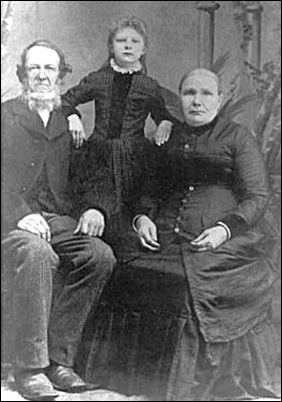
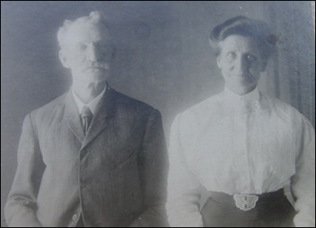
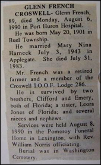
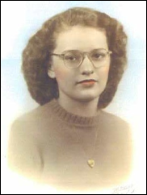

r
French Family Association
The Official Website of the Surname French
Downtown Stouffville, Whitchurch, Ontario, Canada
Chart #174, Charles French, 1790
England, and
Whitchurch, Toronto, Uxbridge,
York Co. Ontario, Canada
Lexington, Worth, Sanilac Co., MI
This chart updated by Mara French on 12/29/10. Numbers in brackets [ ] show sources and refer to the bibliography at the end of this chart. An asterisk (*) shows continuation of that line. Send any corrections or additions to this chart to marafrench@mindspring.com. Revisions: 2009, 2010.
Contents
· Was Charles French Related to Samuel French the Joiner? (the DNA test results are the same)
· Was Charles French in the Early Census Records?
· What Was the Name of Charles French’s Father?
· Why Did the French and Macklem Families Move to Michigan from Canada?
· Why Did Jane Macklem Migrate from PA to Canada?
· Military Records of Charles French
DNA
Group 2 (same for FFA
Chart #11)
French Family who immigrated from Scotland to Markham, Canada (unrelated)
History and Research
PLEASE NOTE that a lot of what is here is only research for further investigation into this line. Nothing has been cast in concrete.
Charles French was born in England in 1790, and resided in London, England on 24 Jun 1808. He therefore immigrated to Whitchurch, York Co., Ontario, Canada, when he was quite a young man, sometime between 1808 and 1811. He married Jane MacKlem ca. 1811 in York Co., Ontario, and their first child was born in 1812. No records of earlier French ancestors are found in York Co. prior to Charles French.
Was Charles French Related to Samuel French the Joiner?
Samuel French the Joiner of Connecticut (FFA Chart #11) has the same DNA as Charles French, also of England. Samuel’s son John had a son, Henry, whose family migrated to Ontario, Canada. Henry and his wife’s first child was Charles French, b. ca. 1784 in Augusta, Ontario, Canada.
Samuel French, chr.
7 Oct 1655 in South Perrott, Dorset Co., England
his son John French, chr. ca. 1720 in Stratford, Fairfield Co., CT
his son Henry French, chr. ca.
1754 in Ripton Parish, Huntington Twp., Fairfield
Co., CT
his son Charles French, b. ca. 1784 in Augusta, Ontario, Canada West
his son Charles Henry French was b. 1832 in Brockville, Ontario, Canada
If you look at the DNA test results for Chart #11 and Chart #174 (this chart), which is GROUP 2, and you look at the last row in that group, you will notice that 3 squares out of 37 squares are not the same as Chart #11.
The 5th generation is approximately when the
Puritan Migration to the Colonies occurred about 1635. These immigrants were
born during the very early 1600s. Most descendants of these Puritans living
today are in the 16th or 17th generation, if the
generations are calculated more or less as follows:
1. 1504
2. 1525
3. 1553
4. 1584
5. 1608 Puritan generation (those who immigrated to New
England)
6. 1635
7. 1673
8. 1700
9. 1735
10. 1758
11. 1780 The
generation of Charles French
12. 1830
13. 1850
14. 1876
15. 1913
16. 1940
17. 1965
18. 1995
Probability for Most Recent Common Ancestor (MRCA)
|
Number of matching markers |
50% probability that the MRCA was no longer than this number
of generations |
90% probability that the MRCA was no longer than this number
of generations |
95% probability that the MRCA was no longer than this number
of generations |
|
10 of 10 |
16.5 |
56 |
72 |
|
11 of 12 |
17 |
39 |
47 |
|
12 of 12 |
7 |
23 |
29 |
|
23 of 25 |
11 |
23 |
27 |
|
24 of 25 |
7 |
16 |
20 |
|
25 of 25 |
3 |
10 |
13 |
|
35 of 37 |
6 |
12 |
14 |
|
36 of 37 |
4 |
8 |
10 |
|
37 of 37 |
2 to 3 |
5 |
7 |
|
65 of 67 |
6 |
12 |
14 |
|
66 of 67 |
4 |
8 |
9 |
|
67 of 67 |
2 |
4 |
6 |
In the case of Charts #11 and #174, there are 34 of 37 markers that match, which means 95% probability that the MRCA was no longer than probably 18 or so generations. Charles French, b. ca. 1790, would be only 11 generations back. Samuel French of Chart #11 immigrated to Stratford, Fairfield Co., CT, ca. 1711. Part of the family moved to Canada. Because we have no verifiable records that indicate that Charles was definitely born in England, he could have been just “of England ancestors” and actually born in Connecticut. The cities to where Chart #11 family members moved to in Canada are:
· Ontario: Augusta, Grenville Co.; Burritt’s Rapids; Brockville; Belleview; Canandaigua; Cataraqui; Cornwall; Cordova Mines; Cornwall Twp.; Consecon; Cataraqui; Cote Landing; Courtwright; Geneva; Grenville Co.; Hastings Co.; Hiller Twp.; Kilmarnock; Kingston; Lancaster; Leads Co.; Maple Grove; Maldehyde; Merrickville; Melville; Mille Roches; Point Anne; Prescott; Picton; Prince Edward; Rednersville; Stormont; St. Thomas; Thurlow, Hastings Co.; Talbotville; Toronto
· Alberta: Calgary; Medecine Hat;
· Quebec: Coteau du Lac and Coteau Landing; Lachine; Montreal; Pointe Clare; Windsor Mills
· Saskatchuan: Loreburn
The majority of cities are in Ontario, so with a bit more research, we may be able to tie in these two charts. No tie to York Co., Ontario, Canada so far.
You should test more markers when you want to compare additional markers against others with similar results to you. The additional STR markers will refine your matches. If you currently have many Y-DNA12, Y-DNA25, or Y-DNA37 matches you should certainly consider upgrading your Y-DNA profile to a higher level. You may always upgrade to a higher level of testing as your number of matches and needs change. You need not retest because you first test is kept for possible later testing. Our motto could be: Test only what you need, and upgrade only when necessary.
Was Charles French in the Early Census Records?
No early public Canadian censuses exist for Ontario before 1851 to our knowledge, and that census was after Charles died in 1846. The following U.S. census records are shown only for future research; however, Charles was living England until about 1810, and we suppose he immigrated directly to Canada without staying for awhile in the U.S.
In the 1790 U.S. census, 3 Charles French are shown:
· Derby, New Haven, CT
· Stratford, Grafton Co., NH
· Water Street East Side, Philadelphia, PA
The 1800 U.S. census also shows 3 Charles Frenches:
· Braintree, Norfolk Co., MA
· Philadelphia, PA
· Rochester, Windsor Co., VT
The 1810 U.S. census could still be applicable for Charles French, as he was definitely in Canada by 1812 when his first child was born. But it appears no Charles French in the U.S. fits his description; therefore, by 1810 he was either in Canada or England.
· Washington, Cheshire Co., NH – this Charles French had 6 family members which eliminates him
· Norwich, New London Co., CT -- this Charles French had 9 family members which eliminates him
What Was the Name of Charles French’s Father?
Another avenue to find Charles’ whereabouts in England may be through his father, who might have been named as his children were: Charles, Matthew, John, or William, and might have been born ca. 1760-1770 in England, Connecticut, or Canada. Further research below indicates his name could also have been Thomas French.
We know that Thomas lived in London in 1808 when he was 18; therefore, he could have been born in London, but we find no such person. He could have had siblings live with him in London, but we find no such person.
Why Did the French and Macklem Families Move to Michigan from Canada?
On a different note, why all of a sudden after Charles French’s death did his wife Jane move to Michigan: Ridgeway (now Richmond), Macomb Co.; and Lexington Twp., Sanilac Co.? Looking at the 1850 census of Michigan, no member of the Macklem family appears; however, 30 members show up in the 1860 census of Sanilac Co., MI, perhaps indicating that Jane French migrated first in 1851, but what drew her to that area?
There were 429 members of the French family in Michigan in 1850, and 15 of them were born in England. The only one born close to the date of Charles (b. 1790) would be Thomas French Sr., b. ca. 1780 in England, and lived in 1850 in Scipio, Hillsdale Co., MI. His wife is Harriet age 50, also born in England, and children George age 20, Caroline age 12, Robert age 10, and Albert age 7. Living next door to them is Thomas French Jr., age 34, his wife Martha age 31, and children Mary A. age 13, Elizabeth age 11, and William age 5. Living next door to them was probably another son, Benjamin French, age 32, and his wife Mary age 32, and their children Charles age 3, James age 1, and Elizabeth age 9. All 3 head of households were farmers and born in England (the same as Charles French) and their children were born in Michigan. See 1850 MI census below. Since Benjamin was 32 in the 1850 census and born in England, he would have had to immigrate to MI after 1818 when Charles was in Canada. If these 3 Frenches were relatives of Charles French and lived in Michigan in 1850 and before Jane French migrated there, perhaps that was the draw to entice Jane French to move to Michigan. Further research has not be done to know if Thomas Sr. and Charles were brothers.
1850 Census of Michigan
1840 Census of Michigan
Checking the census records back earlier in 1840 for a Thomas French Sr. and Thomas French Jr., both appear in Scipio, Genesee, MI. They do not appear in the 1830 or 1820 census. You’ll notice that Thomas French Jr.’s wife, Martha, was 31 in 1850, b. ca. 1819, and in Canada. These families could have lived in Canada before migrating to MI. Thomas French Sr. no longer appears in the 1860 census, but Thomas French Jr. appears in Scipio, Hillsdale, MI, age 44 with children Elizabeth and William. In 1870, Thomas French Jr. and his wife Martha live alone, while Benjamin and Mary live with their children James, George, John, Clark, and William in Scipio, Hillsdale, MI. In 1880, Thomas Jr. and his wife Martha live alone in Scipio, and Benjamin lives in Scipio with his wife Mary and children William, Minnie, John, and Eliza.
During the "Michigan Fever" of the 1830s, large numbers of Canadians streamed westward across the border. By the late 1840s, over 20,000 Canadians and newly landed foreign immigrants moved to the United States each year. California gold fever attracted many, beginning in 1849.
Why Did Jane Macklem Migrate from PA to Canada?
So, on the other hand, what made Jane Macklem migrate from Mt. Bethel, Northampton Co., PA, to York Co., Ontario, Canada? Did Charles French meet her in Mt. Bethel? The MacKlem family moved to Canada in 1802 just before their last child was born in 1804. Charles French was in Canada at the earliest between 1805-1810, so perhaps the 2 families migrated together to Canada. Jane Macklem’s siblings listed below:
Jane Macklem (1788-1875), b. 7 March 1788 at PA, m. Charles French (1790-1846), d. aft. 1870 at Macomb County, MI
James William Macklem (1789-1877), b. 24 May 1789 at PA, m. Ann Lundy (1798-1886), 1817 at Stouffville, York, Ontario Canada, d. 23 June 1877 at Worth Twp., MI
Thomas Adam Macklem (1794-1847), b. 1794 at PA, m. Catharine Wideman (1796-1867), d. 17 January 1847 at Whitchurch Twp., York County, Ontario, Canada
Elizabeth Macklem (1797-1852), b. 1797 at PA, m. Ludwig Wideman (1781-1837), 11 March 1817 at Ontario, Canada, d. 28 April 1852 at Whitchurch Twp., York County, Ontario, Canada
John Macklem (1799-1877), b. ca. 1799 at PA, m. Marie Magdalene Wideman (1800-1855), d. 24 June 1877 at Markham Twp., York County, Ontario, Canada
Mary Ann Macklem (1800-1830), b. December 1800 at PA, m. Joseph Lemon (1804-1887), 23 April 1823 at Markham Twp., York County, Ontario, Canada, d. 20 June 1830 at York County, Ontario, Canada
William Macklem Jr. (1802-1893), b. 17 April 1802 at PA, m. Elizabeth Rymal (1802-1868), 11 February 1822 at Newmarket, York County, Ontario, Canada, d. 25 September 1893 at Barton Twp, Wentworth County, Ontario, Canada
Lydia Macklem (1804-1843), b. 1804 at York, Ontario, Canada, d. 1843
Around 1800, Upper Canada (Ontario) had about 35,000 people, including 23,000 Loyalists and "late Loyalists" and their descendants, mainly from upstate New York, New Jersey, and Pennsylvania. They were principally established on farms along the upper St. Lawrence River valley. Such was the case with the Macklem family, but could it also have been for the French family?
Records in England
The following records appear in England for “a” Charles French born ca. 1790, but not necessarily the one of this pedigree. We need to verify if these families immigrated or if they remained in England.
· Charles French, christened on 25 Dec 1790 in Chatham, Kent, England, the son of Frederick and Elizabeth French. Frederick and Elizabeth were married ca. 1777. Looking further into the French family from Chatham, Kent, England, other Frenches who were christened were Ann French, 25 Jan 1778; Elizabeth French, 20 May 1787; and Frederick French, 21 Oct 1781, all children of Frederick and Elizabeth French, besides Charles French.
· Charles French, christened on 30 Jun 1790 in Chatham, Kent, England, the son of Thomas and Ann French.
· Charles French, christened 20 Sep 1791 in Hertford, Hertfordshire, England, the son of William and Jane French at St. Andrew’s Church.
· Charles French, christened 18 Aug 1791 at St. James, Clerkenwell, Islington, Middlesex, London, the son of John and Ann French.
· Charles French, christened 10 Feb 1792 at St. Andrew, Middlesex, London, the son of Mary French, probably not likely our Charles.
· Charles French christened 6 Jul 1785 in Bovey Tracey, Devon County, England, the son of John and Margaret French. Devon County is adjacent to Dorset County in England where the family from FFA Chart #11 resided and have the same DNA tested and shown in DNA Test Group 2.
· On the British National Archives website, http://www.nationalarchives.gov.uk/, I did find a Peter Robinson and a Charles French listed both in London in 1808. Per the military records below, both Peter Robinson and Charles French were together in the military in Canada in 1812 (The War of 1812), and Peter Robinson was Charles French’s command officer. In London, Peter is listed as living at 8 Catherine Wheel Alley, near Bishopsgate Street, a harness maker and weaver. Charles French is listed as living at 14 White Row, near Spitalfields, a pawnbroker. Searching on Google Earth, these 2 locations are very near one another in the NE section of the City of London. MS 11936/444/816963, 24 Jun 1808. In 1808 Charles would have been 18 years of age.
· Peter Robinson was born in 1785 and died in 1838. Note that he was born in New Brunswick, NJ, and moved to York, Ontario, Canada in 1798. He fought with Charles French in the War of 1812 at the capture of Detroit. Afterwards, he administered the passage and settlement of over 2500 poor Catholic families from County Cork, Ireland, to Canada. Peter Robinson brought emigrants from Cork, Ireland, to Canada in 1823 and 1825 per this website: http://www.theshipslist.com/ships/passengerlists/peterrobinsonindex.htm. Also see http://kennytree.com/links/peter_robinson.htm. Settlers resided in Peterborough, Ontario, Canada. These dates are too late to belong to Charles French. We’re not sure if the Peter Robinson in London is the same Peter Robinson born in NJ.
Military Records of Charles French
The best early records we have of Charles French are his military records.
· 16 Aug 1812 -- Charles French was in the #3 Militia in York Co., Ontario, Canada. He also served in the 1st Rifle Co, Regiment of York Co. Militia under Capt. Peter Robinson and was at the Capture of Detroit on 16 Aug 1812 during the War of 1812-1814. There were 100 volunteers under Major General Isaac Brock, who was Capt. Robinson’s superior. Also members of this group were 2 Macklem & 2 Wideman brothers (both were surnames of the Charles French family of FFA Chart #174). On July 11th 1812, 2,500 American troops under General Hull reached the Detroit River and camped at Fort Detroit. At Amherstburg on the Canadian side of the river were 100 British regulars, 300 militia and 150 Indians led by Tecumseh. Continues . . . Peter Robinson was one of the early settlers in the town of Newmarket, York Co., Canada in 1812. His name appears as one of the well-known names in the early history on a list of shareholders.
· 6 Feb 1813 -- The book “History of Leeds and Grenville, Ontario, from 1749-1879”, talks about the Raid Upon Brockville. Col. John Kilborn, of Newboro, has furnished us with the following account of the affair. Colonel John Kilborn was born on 27 Aug 1829 in Brockville, Ontario, Canada.
" I, with other young men, volunteered to serve in the First Flank Company of the County of Leeds, under Captain John Stuart, late Sheriff of the Johns town District, for six months service, and I happened to be the first man placed on duty by Lieutenant William Morris (late the Hon. William Morris), to guard the Kingston road, near the bridge at the West end of Brockville. I continued on duty with the company, being drilled daily by Lieutenant Morris, until September, when an attempt was made to capture Ogdensburg, it being at that time de fended by a strong fort and a considerable force of riflemen, by whom we were daily annoyed. The expedition was under Colonel Lethbridge, of the British army, at that time commanding our garrison at Prescott. Assistance from Brockville men was asked for, and with about forty others, I volunteered, and marched to Prescott during the night, under the command of Captain Reuben Sherwood and Lieutenant William Morris. Boats were ready, and early in the morning, led by Colonel Lethbridge, with part of a company of regulars, the attack was made. The boat I was in was commanded by Lieutenant Morris. After getting near the batteries (which they plied constantly), and in front of the town, we failed to effect a landing, and returned to Prescott. The loss in our boat was one killed, (Mott, a cousin of Henry Mott, Delta,) and eight wounded."
On the 6th February, 1813, Captain Forsyth, the American commander at Ogdensburg, was induced by parties from this side of the line to make a descent upon Brockville, the report having been circulated that the American prisoners confined in the gaol were being treated with severity. The raiding party consisted of Captain Forsyth s company and citizen volunteers, numbering, all told, about 200. They left Ogdensburg about nine o clock in the evening, proceeding by sleighs to the rear of Morristown. They crossed the ice in two divisions, flank guards being despatched to each side of the town, while the main body stationed themselves in Court House Square. Forsyth, with a few men, entered the gaol, demanded the keys, which were surrendered, and all the prisoners, except one charged with murder, liberated. A number of prominent citizens were taken prisoners and conveyed to Ogdensburg, with the exception of Dr. Hubbell, who was paroled at Morristown. Among the prisoners were Major Carley, three captains and two lieutenants.
The following is the list of those taken, except officers : Stephen Shipman, David Wheeler, Charles French, Benjamin Gould, William Graves, Winthrop Tufts, Zea Castle, Ichabod Wing, George Allen, Henry Slants, Timothy Buell, Abram McCue, Thos. Daenham, Alex. Campbell, John Davis, Daniel McMullen, Richard McBane, Joseph Trader, Isaac C (name illegible), Uri Stone, Archibald Ladd, David Wheeler, John W. Easton, Peter Whitman, Joseph Howard, Levi Stone, Thos. Thornton, Isaac Mather, Samuel Elliott, Joseph Wooley, Jas. Smith, Horatio Bradshaw, Gamaliel Tuttle, John Green, Joseph Ryon, Norris Loverin, David Stephenson, Jehiel Smith, Thomas Rambley, William Robinson, Richardson Cameron, Henry Smith, Cleaveland Stafford, John Joy, John Whitlesy.
The enemy took away one hundred and twenty muskets, twenty rifles, two casks of ammunition, and some other public stores. Private property was not molested. The excuse given for the expedition by American writers, was that the Canadian force, stationed at Brockville (though the place was then known as Elizabethtown), had frequently crossed the river, in the vicinity of Morristown, and apprehended deserters.
A few hours after the arrival of the prisoners at Ogdensburg, two officers from Prescott visited the American headquarters, and secured their parole, with, we believe, the exception of Major Carley, who was subsequently exchanged.
The midnight raid upon Brockville led to the inauguration of measures of a retaliatory character.
On the arrival of the Governor at Prescott, Lieutenant-Colonel Pearson suggested that an attack should be made upon Ogdensburg. It was finally arranged that the colonel should proceed to Kingston, with the Governor, while Colonel McDonnell, of the Glengarry Fencibles, should make-a demonstration on the ice, the object being to ascertain the strength of the enemy.
Early on the morning of the 22nd of February, Lieutenant-Colonel McDonnell marched the British force out upon the ice in two columns, but not with the intention of making an attack. One column directed its attention to a point where a breastwork had been thrown up below the Village of Ogdensburg ; the other menaced the stone garrison at the upper portion of the village. The first and largest column, meeting with scarcely any resistance, marched directly into the village. Only a few shots were fired by the Yankees from the two cannon in that quarter, the enemy falling back across the Oswegatchie, and joining the force under Forsyth, the Commander-in-Chief.
Duncan Fraser and Jonas Jones were at this juncture despatched by Colonel McDonnell, under a flag of truce, to the American headquarters, at the stone garrison, with a demand for an unconditional surrender. Forsyth s answer was, " Tell Colonel McDonnell there will be more fighting." The bearers of the reply had no sooner entered the ranks, than the battle commenced. After a sharp encounter, Forsyth was driven from his position, and his order given to retreat to Thuber’s Tavern, Black Lake. Fifty-two prisoners were taken by the British, and conveyed to Canada. The Americans lost five killed, and eighteen wounded. Most of the prisoners were paroled; several were sent to Montreal, where they were for a time confined, a few making their escape, and the balance being exchanged.
The British held possession of the village during the day, securing a large amount of public stores and munitions of war. Before departing, the barracks were burned, and an attempt made to destroy the bridge. Brockville, called Elizabethtown during the War of 1812, was renamed after the hero of the Battle of Queenston Heights, Sir Isaac Brock. A bust-type statue is located in front of City Hall Square in the town of Brockville (see photo below).
Maps of York County
Markham in Ontario along Lake Ontario. Brockville is in the far upper right-hand corner.
Brockville along the St. Lawrence River, just north of New York state.
This map shows Whitchurch, Markham, Stouffville, York, and Uxbridge where this particular French family resided in Canada.
The plaque at the right mentions the Quaker Lundy family which could indicate the religion and possible early homesteads of the Quakers in Pennsylvania, Vermont, and New York.
James William Macklem (1789-1877), b. 24 May 1789 at PA, m. Ann Lundy (1798-1886), 1817 at Stouffville, York, Ontario Cananda, d. 23 June 1877 at Worth Twp., MI
Discounted Records of Note
The following records appear incorrect for our Charles French, but they are kept here for future researchers.
· Per this website, http://members.shaw.ca/canada_legal_history/on.htm, a Charles French was hanged on 23 Oct 1828 in Toronto, York Co., for murder for shooting Thomas Joslin during a drunken quarrel. Another report states he shot Edward Knowlan at midnight. This was the first hanging at Court House Square. A plaque to this effect can be seen at the corner of Court Street and Toronto Street. Charles was double hanged with J. Christie, for which Sheriff Jarvis billed the province £92. Charles was a printer by trade. This Charles was not the Charles of this ancestry, but perhaps it was his father. Definitely no proof.
· Ref [20] and [30] believe Charles was born in Leonard Stanley, Gloucestershire, England, but this has not been verified. Leonard Stanley is a small village in the county of Gloucestershire in the Cotswolds. Charles was christened ca. 1795 at Stonehouse, Gloucestershire, which is a few miles north of Leonard Stanley. Thomas, his father, was b. ca. 1766 and Mary Jackway ca. 1770. See Frenches of Uley, Gloucestershire, England. This French line from Uley left for Canada and settled in Ontario, but none of the extensive and accurate research indicates that this line is the same as our Charles French [30]. In other words, the dates, names, and places do not line up. Another part of this line immigrated to New Zealand [30].
· French Family who immigrated from Scotland to Markham, Canada (unrelated).
· This record below is from the Quebec Vital and Church Records (Drouin Collection), 1621-1967, concerning Charles G. Al French’s (Charles George Albert French) enterrement (burial). He was a Catholique, and the place of worship was St. Hyacinthe (Notre-Dame-du-Rosaire) in Quebec. It is dated 1846 and written in French. The name on the left side clearly states Charles French. The FFA does not know if this was the same Charles French of this chart, but all indications are that it is not because our Charles French was not Catholic and did not live in Quebec, however, the death date is the same, 1846.
Future Research
· It is only a prediction that both Charles French and Peter Robinson were living in the same area in London in 1808. Then they were both in the Militia together in York Co., Ontario, Canada in 1812. Of course I never proved if these were the same 2 people, but it's as close as I could research. Peter Robinson was born in NJ as far as I researched. But he traveled abroad a lot, both to England and Ireland.
· At this point it is almost impossible to track down a Charles French born in England in 1790. No census records until 1841. I assume if one would find all the Charles Frenches in the 1841 England census and look when they were born (must be 1790), some of those could be eliminated as they did not immigrate to Canada but remained in England in 1841.
· Another thing to do would be to find siblings of Charles French in Canada. So far I have found none. Canada also did not have a census that early.
· A George French was born in 1791 in Botley, Hampshire, England who died 30 May 1867 in Wellington, Ontario, Canada. His parents were John French and Ann Cherry. George m. Rebecca Hobbs. Check Botley, England for a Charles French. We do notice that George lived in Virginia in 1843 before moving to Canada, so this does not seem like a good possibility to be a brother of Charles.
· I checked for a possible marriage of “a” French in London in 1788, just 2 years before Charles was born. I found Thomas French who married Sarah Bethell on 5 Sep 1780. Also John French who married Elizabeth Starkey on 14 Jan 1781. Also Archibald French who married Elizabeth French on 21 Apr 1783. Also John French who married Mary Newey on 11 Jun 1784. Also John French who married Hannah Wilson on 2 Jul 1785. Also John French who married Mary Thomas in 1786. Also James French who married Ann Marshall on 22 Mar 1787. And John French who married Ann Reynolds on 11 May 1787. Also Thomas French who married Susanna Lambard on 6 Feb 1787. Also Thomas French who married Ann Shore on 15 Mar 1787. And William French who married Jane Walker on 4 Apr 1787. These records may or may not be worth looking at. We do not even know if Charles French was born in London in 1790, but he was there in 1808. Charles named his children Matthew, John, Caroline, Sarah Rose, William James, Elizabeth, Jesse Helpit, and Joseph. There isn’t any one name that stands out in my mind as a possibility other than Helpit. That must be a surname.
· Looking up the surname Helpit at ancestry.com without entering a first name or any dates, I find only 8. They are from Liverpool, England; Iowa; Germany; and New Orleans. The dates are all after the birth of Charles French and in the latter part of the 1800s.
· Charles French’s son, Jesse Helpit French, states in his death certificate that his father’s name was William. Perhaps it was Charles William French.
First Generation
1.1* Charles French, b. ca. 1790 in England (no verification whatsoever except for the headstone, which could indicate that his family was “of England”, but he could have been born in Connecticut, for example). Charles French’s birth date is per his cemetery headstone (see below), d. 7 Nov 1846 (age 56) in Whitchurch Twp., York Co., Ontario, Canada, and buried at the Bloomington Cemetery at 6041 Bloomington Rd.
The Canadian Census did not begin until 1851, 5 years after Charles died. Likewise, the census of England began in 1841.
He m. Jane MacKlem ca. 1810 in Stouffville, York, Ontario, Canada [3]. Jane’s parents were William Macklem (1767-1844) and Ann Hastings (1768-1854), both born in Ireland, and parents of 8 children, all born in Mt. Bethel, Northampton, PA except the last two who were born in Upper Canada [9]. Charles was on the militia rolls from York Co. under Peterson. Charles is not the Charles French who fought in the War of 1812. I’ve searched these websites to no avail: http://www.islandnet.com/ocfa/search.php, http://www.theshipslist.com/, http://www.olivetreegenealogy.com/ships/, http://www.ancestry.co.uk/, and countless other searches besides those listed in the bibliography.
Charles French’s Gravestone, Bloomington Cemetery, Whitchurch, and the Church
Jane MacKlem was born 7 Mar 1788 in Mt. Bethel, Northampton Co., PA, d. 5 Jun 1875 in Ridgeway, Macomb Co., MI [9]. Jane was living with her son William James and his wife Mary Ann Johnson in the 1870 census outside Romeo, Macomb Co., MI. The earliest census showing a Macklem member in PA was “a” John Macklem who lived in Hempfield, Westmoreland, PA, in 1810 according to the census. Jane was the oldest child of William Macklem (1767-1844) and Ann Hastings (1768-1854). Both parents were born in Ireland (most likely in Tyrone or Donegal Co.), and they married in Ireland in 1786, and emigrated from Ireland to Mt. Bethel Twp., Northampton Co., PA, ca. 1788, when Jane was born. Thereafter, they immigrated to York Co., Ontario, Canada after April 1802, after having 7 children in PA, and their last child, their 8th child, was born in York, Ontario, Canada [16].
William Macklem, d. 5 Dec 1844, Dickson’s Hill, Markham Twp., York Co., Ontario, Canada. They are buried in Dickson's Hill Cemetery, East Part of Lot 30, Concession 7, Town of Markham, Ontario. Plot E1.12 To the memory of William Macklem who departed this life December 5, 1844; in the 77 year of his age. Plot E1.13 To the memory of Ann , wife of William Macklem who departed this life May 18, 1854; in the 86 year of her age. Several other family members are also buried in this cemetery.
Charles and Jane’s first child was born on 24 Nov 1812 in Whitchurch, York Co., Canada. Just prior to that, on 16 Aug 1812, Charles was in the military at the “Capture of Detroit”. He was then in the “Raid Upon Brockville” on 6 Feb 1813. Therefore, their next child was born sometime in 1814 after Charles returned from the military. They had 8 children altogether.
After Charles French died in 1846, Jane migrated to Sanilac Co., MI, bringing Joseph, their youngest son, with her. The other children followed [3]. She remarried a man named John Caster [3] or John C. Kester from MI on 14 Sep 1851 [2]. The ceremony was performed by John Macklem, a lay minister [2]. John was b. 29 Mar 1786 in Mt. Bethel Twp., Northampton Co., PA (same place where Jane Mackelm was born), and d. 6 Mar 1856 in Lexington Twp., Sanilac Co., MI and is buried at Huckins Cemetery, Lexington Twp., Sanilac Co., MI [9]. In 1851 Jane went back to Pickering, Ontario, Canada to marry John Caster. She was with her son William James French in Macomb Co., MI, in the 1870 census [2]. Jane d. 6 Jun 1875 in Ridgeway (now part of Richmond), Macomb Co., MI [3]. Some of her Macklem family were in Richmond at that time.
Stouffvile (Whitchurch and Markham), 1880
The western end of Whitchurch and Markham Townships was purchased by the British crown
from the Mississaugas of the New Credit First Nation in 1787 as part of the Toronto Purchase. Whitchurch Township was created in 1792 as one of ten townships in York County. It was named in honour of the village of Whitchurch, Herefordshire in England, where Elizabeth Simcoe (wife of Upper Canada Lieutenant Governor Sir John Graves Simcoe), was born. The first European settlements in Whitchurch Township were established in the 1790s, though Whitchurch and large areas of southern Ontario were only ceded by the south-Central Ontario Mississaugas in 1923. Between 1800 and 1802, John Stegman completed a survey of the township which created a system of land concessions. This allowed for the organized distribution of land to settlers, with each concession containing five, 200-acre (0.81 km2) lots. This layout remains visible today, as the road network in the area reflects the locations of the boundaries between concession blocks. Early settlers of this period included Quakers and Mennonites--two pacifist groups from the nearby American states of Pennsylvania, Vermont and New York. Both groups were seeking religious freedom, and were identified by the Upper Canadian government as people with necessary skills and abilities for establishing viable communities that could, in turn, attract others to settle in the region.Second Generation
Children of Charles and Jane (MacKlem) French, 1.1
2.1*
Matthew J. French [3], b. 24 Nov 1812 in Whitchurch,
York Co., Canada [2], d. 2 Jun 1894 in Lexington Twp., Sanilac Co., MI, and is
buried at the Croswell Cemetery, Croswell, Sanilac Co., MI [9]. He m1. Abigail
Patterson on 26 Sep 1837/38, then moved to Sanilac Co., MI [2]. Abigail was b.
16 Apr 1818 in Upper Canada, d. 13 Oct 1862 in Sanilac Co., MI and also buried
at the Croswell Cemetery in Croswell, Sanilac Co., MI [9]. He m2. Janet/Janett Arnot
ca. 1864 [2]. She was b. ca. 1827 in Scotland [9].

Matthew French
from Ref. [14]
Matthew French is a farmer of 30 years standing in Lexington Township, located on section 28; was born Nov. 24, 1812, in Canada. He is the son of Charles and Jane French, and was reared to the vocation to which he has devoted his life in the Dominion. He came to Lexington Township in 1854, and bought 80 acres of land. The property comprised 70 acres of improved 1and, and is now all under cultivation except about 10 acres. The farm residence is a substantial brick building, and the orchards are valuable. Mrs. Abigail (Patterson) French, deceased, was a native of Canada, and was married to Matthew French in Whitchurch, Oct. 11, 1838. Six children were born of this union, William, now a farmer of Lexington Township; Thyrza J., David, Mahala, Mary A. and Margaret. The mother died in Lexington, Oct. 13, 1862. Mr. French was a second time married, June 13, 1866, to Janet Arnot, a native of Scotland. The family attend the Christian Church.
2.2* John M. French, b. after 1814 in Whitchurch Twp, York Co., Ontario, Canada [2]. Prior to his birth,
his father was in the military. John French d. 10 Dec 1874 in
Scott Twp., Ontario Co., Ontario [17]. He m. Harriet Jones on 5 Sep 1842
and stayed in Canada in Hartman, Ontario [2]. Harriet was b. ca. 1923 in Upper
Canada and d. 31 Dec 1894 in Scott Twp., Ontario Co., Ontario [9]. In the 1851
Uxbridge census was John French age 37, living near his brother William. He was
also a farmer in the same area, with wife Harriet age
29, and children Henry age 9, George age 7, Levi age 6, and Sophia French age
3. Harriet d. 31 Dec 1894 in Scott Twp., Ontario Co., Ontario
[17]. In the 1871 census of Ontario, Canada, John was 57 years old, born
in Ontario, living in Scott, Ontario North, ethnic origin was English, religion
was Wesleyan Methodist, occupation was a farmer, listed as head of household.
2.3
Caroline French, b. 24 Feb 1817 in Whitchurch
Twp., York, Ontario, Canada, m. John Connor and stayed in Canada [2]. Both are
buried at the Bloomington Cemetery next to her father in Whitechurch
Twp., York, Ontario, Canada [2]. John married again
after Caroline d. 15 Jul 1850 [2].
2.4
Sarah Rose French, b. 21 Jan 1818 in York Co., Ontario, Canada, m. John Papst on 23 Jun 1838/39 and stayed in Canada [2]. She d. 15
Sep 1880 in Lexington, Sanilac, MI. They had 10 children: Rudolph, Elizabeth
Jane, Albert, Margaret, John, Thomas J., Emily, William Henry, Adeline, and
Frank F. Papst.
2.5*
William James French, b. 15 Nov 1819 in Whitchurch,
York Co., Upper Canada [9], d. 17 Jun 1879 at Romeo, Bruce Twp., Macomb Co.,
MI, buried at the Goodrich Cemetery in Macomb Co., MI [9]. He m. Mary Ann
Johnson on 20 Jan 1844 in Stouffville, York Co.,
Ontario [5]. She was b. 29 Jan 1823 in York Co., Canada [9], d.
17 Jun 1879 in Bruce Twp., Macomb Co., MI and buried at the Goodrich Cemetery
[5], or d. 29 Oct 1875 in Romeo, Bruce Twp., Macomb Co., MI [9]. The 1851
Census of Canada West (Ontario) indicates that he was working as a farmer in
Canada West (Ontario), age 32, and living with his wife, Mary age 28, and children
Charles age 8, Hannah Jane age 6, James V. age 4, Salener
age 3, Jesse French age 1, all living in Canada West (Ontario), Ontario Co.,
Uxbridge sub-division. William Henry French was not yet born. There is another
William French in this census working as a farmer in Lancaster, District of
Glengarry County, Province of Canada West (Ontario), also born in 1819, with
wife Emelia, and children Percillie
Emily, William Alexander, George Edwin, and John Albert.
William James French, Goodrich Cemetery in Macomb Co., MI, 15 Nov 1819 – 17 Jun 1879.
Apparently
there is another William born the same year living in Canada, but named William
H. French. The 1871 census of Ontario, Canada indicates he was born in Quebec,
now age 52, living in Glengarry, Lancaster, of English ethnic origin, religion
was Church of England, Anglican, occupation was a laborer, listed as head of
household. This may be the William connected with Charles death certificate
above. This William’s family included Isaac, Judith, David, Therdon,
Washington, and Amanda – this information is included here only to alert
researchers of this separate family.
2.6
Elizabeth French, b. ca. 1821 in Whitchurch,
York Co., Ontario, m. Peter Shewfelt on 31 Jan 1843,
in Markham, York Co., Canada West, and stayed in the Pickering/Markham area of
Canada [2]. She d. 1889 in Detroit, Wayne Co., MI and is buried at the Lakeview
Cemetery, Worth Twp., Sanilac Co., MI [9]. Peter Shewfelt
was b. 1811 in Wentworth Co., Upper Canada, d. 30 Jan
1888 in Denver, Arapahoe Co., CO, and is buried at the Riverside Cemetery in
Denver, Arapahoe Co., CO [9]. They had 11 children: Almira,
Alexander, Janette, Sophia, Jane, Esther Ann, Mary Alberta, William John
(Jack), Charles C., Byron, and Peter Shewfelt [9].
2.7*
Jesse Helpit French [3], b. 28 Feb 1827 in Whitchurch, York Co., Ontario, m. Mary Ann Dougherty, moved
to Sanilac Co., MI, then to Macomb Co., MI. Her parents and brother are buried
at the Bloomington Cemetery in York Co., Ontario. Mary Ann Dougherty d. on 26
Apr 1909 in Sanilac Co., MI and is buried at the Croswell Cemetery [9]. She was
b. 15 Feb 1925 in Ireland [9]. They had 6 children [9]. Jesse
died on 6 Oct 1913 in Sanilac County, Worth township, Michigan as a
widower at age 86 (see death certificate below). He was a farmer. The
certificate states his father as William French and his mother as Jane Macklem. He states that both his parents were born in
England. The certificate was signed by his brother Joseph
French. Apparently Joseph thought his father was William and not
Charles, but perhaps his name was Charles William French. It is unknown as to
where the name Helpit came from.

Jessie and Mary Ann French, probably with their only daughter, Barbara A. French [9]
2.8* Joseph W. French [3], b. 16 Apr 1829 in
York Co., Ontario, Canada [2]. He had migrated to Michigan in 1851 with his mother
after his father had died in Nov 1846. They lived in Sanilac Co., MI. He m1. Emmaline or Emeline Law on 28 Feb
1852 in Sanilac Co., Michigan. Emeline d. 9 Oct 1857.
They had one son [9]. He m2. Rachel J. Lewis on 28 Mar 1858. Rachel d. in 1892
in Sanilac Co., and is buried at the Croswell Cemetery [9]. They had 5 children
[9]. He m3. Emma Barnes on 2 Oct 1893 in Carsonville,
Salina, Michigan when he was 63 and Emma was 41 [2]. Emma Barnes parents were
Henry Barnes and Selina Allen. The 1860 Michigan
census lists Joseph, age 31, living with Rachel, age 31, and 2 of their
children: Ransom (from his first marriage) age 5, and Anna J. age 1. Joseph d.
28 Jun 1912 I Applegate, Sanilac Co., MI and is buried at the Croswell Cemetery
[9].
JOSEPH W. FRENCH from Ref. [14]
Joseph W. French, farmer, Lexington Twp., located on Section 48, was born near Toronto, Canada, April 16, 1829. His parents, Charles and Jane (Macklem) French, belonged to the agricultural class in the Dominion, and the son was reared to that calling. In 1851 he came to Sanilac County, and not long afterwards purchased 50 acres of land on Section 9, Worth Twp, on which he resided 10 years. He cleared 40 acres and put the farm in a very valuable condition. He sold it in 1869 and purchased his present homestead property. He labored on this alone until he cleared 24 acres, and now has the entire tract of the acres in finely improved and cultivated condition, with orchards, fine buildings and valuable stock, including 6 cows. He was married the first time February 28, 1852, in Lexington Twp., to Emmeline, daughter of Martin and Sophia Law. She was a native of Canada and died October 9, 1857, leaving 1 child, Charles R., now a farmer in Isabella County, Michigan. Mrs. Rachael J. French was born November 22, 1827 in London, Canada, and is the daughter of Levi and Anna Lewis. She was married March 28, 1858, to Mr. French, and of this union 5 children have been born, as follows: Jennie, Emma, Katie, William J. and Sarah. The two oldest and the youngest daughters are now popular teachers in Sanilac County.
Third Generation
Children of Matthew and Abigail (Patterson) French, 2.1
Family Photo of William, Margaret, David, Thyrza, Mary, and Mae (Mahala?) French
3.1* William F. French, b. 30 Oct 1839 in York Co., Upper Canada, d. 4 Jan 1926 in Sanilac Co., MI, buried at the Croswell Cemetery, Croswell, Sanilac Co., MI, m1. Rebecca May Lewis who was b. 1 Mar 1841 in Upper Canada, d. 22 Oct 1898 in Sanilac Co., MI, and buried at the Croswell Cemetery, Croswell, Sanilac Co., MI [9]. William was a farmer of Lexington township, Canada [14]. William m2. Adelaide L. Wilson on 15 Nov 1899. She was b. Mar 1854 or 26 Mar 1849 per the cemetery, d. 27 May 1901 in Sanilac Co., MI, buried at the Croswell Cemetery, Croswell, Sanilac Co., MI [9]. They were married only 1 ½ years before she died. William m3. Fanny Thornton who was b. ca. 1849 in PA [9].
William and Rebecca French
3.2 Thyrza J. French [14], b. ca. 1842 in Canada West [9].
3.3* David French [14], b. 30 Jun 1845 in York Co., Canada West, d. 15 Dec 1927 in Sanilac Co., MI, m. Catherine Sprowl on 5 Jan 1866 in Sanilac Co., MI [9]. Catherine was b. 1843 and d. 30 Apr 1881, age 38, buried at the Croswell Cemetery. They had 3 children.
David and Catherine (Sprowl) French
3.4 Mahala French [14], b. Nov 1848 in Canada West, d. 25 Jan 1917 in Sanilac Co., MI and is buried at the Croswell cemetery [9]. She m. 5 Jan 1866 in Sanilac Co., MI to John Sprowl and had 6 children: Henry, John Edward, Abbie, Matthew, Nettie, and Ida B. Sprowl [9].
3.5 Mary Ann French [14], b. Aug 1850 in Canada West, d. 9 Jan 1929 in Sanilac Co., MI, and is buried at the Croswell cemetery [9]. She m. Joseph Neal on 12 Oct 1873 in Sanilac Co., MI, and had no children [9].
3.6 Margaret French [14], b. 19 May 1853 in Whitchurch Twp., York Co., Canada West, d. 31 Oct 1935 in Croswell, Sanilac Co., MI, and is buried at the Croswell Cemetery. She m. William Nicholas Cook on 19 Feb 1877 in Sanilac Co., MI, and had 3 children: Clarence N., Irvin Roy, and Lottie May Cook [9].
Children of John M. and Harriet (Jones) French, 2.2
3.7*
James Henry French (known as Henry), b. 7 Jul 1843 probably in Uxbridge,
Canada, age 9 in the 1861 Uxbridge census. He d. 1935 in
Mount Albert, York Co., Ontario [9]. He m. Hulda
Sisler and had 2 children. She was b. 9 Feb 1859 in Whitchurch Twp., York Co., Canada West and d. 25 Mar 1932
in Mount Albert, York Co., Ontario [9].
3.8*
George Arthur French (known as George), b. 1844 probably in Uxbridge,
Canada, age 7 in the 1861 Uxbridge census. He m. Eugenia Almira
Leavens on 2 Nov 1876 in Cannington, Ontario Co.,
Ontario [9]. She was b. ca. 1845 in Canada West, d. 21 Jun 1883 in Scott Twp.,
Ontario Co., Ontario [9]. They had 3 children.
3.9
Levi French, b. 1845 probably in Uxbridge, Canada, age 6 in the 1861
Uxbridge census.
3.10
Sophia Emma French, b. 25 Jun 1849 in Uxbridge, Canada, age 3 in the
1861 Uxbridge census. She m. Robert Rowland on 10 Oct 1866 in Newmarket, York Co., Canada West. He was b. 14 Nov 1832 in
Ireland, d. 25 Aug 1905 in Toronto, York Co., Ontario, Canada [9]. They had 8
children: Thomas H., Annie Jane, John Albert, Robert Henry, Charles Edward,
Agnes Minetta, Florence Ethel, and William Franklin
Roland [9].
3.11
Mary Jane French, b. 7 Nov 1852 in Uxbridge Twp., Ontario Co., Canada
West, d. 30 Sep 1919 in Uxbridge, Ontario Co., Ontario, and is buried at the
Uxbridge Cemetery [9]. She m. William Walter Chapman on 28 Aug 1878 in Whitby, Ontario Co., Ontario [9]. He was b. ca. 1845 in
Uxbridge Twp., Ontario Co., Canada West, d. 3 Mar 1880
in East Gwillimbury Twp., York Co., Ontario, Canada
[9]. They had a son, Charles Ira Chapman [9].
3.12
Charles French, b. 10 Dec 1856 in Uxbridge Twp., Ontario Co., Canada
West [9].
3.13
John French, b. 14 May 1858 in Uxbridge Twp., Ontario Co., Canada West,
d. 1941 [9]. He m. Emma Lapp on 7 Nov 1883 in Uxbridge Twp., Ontario Co.,
Ontario, Canada [9]. She was b. 22 Nov 1862 in Scott Twp., Ontario Co., Canada
West, d. 1933 [9]. They had 2 children.
3.14
Lamaira French, b. 1862 in Uxbridge
Twp., Ontario Co., Canada West, died as child in 1863 [9].
3.15
Frederick William French, b. 13 Mar 1868 in Scott Twp., Ontario Co.,
Ontario [9]. He m1. Marianna Lydia Taylor on 28 Dec 1892 in
Clinton, Huron Co., Ontario, Canada [9]. She was b. 23 Dec 1865 in
Yorkshire, England and d. 21 Apr 1905 in East Toronto, York Co., Ontario,
Canada [9]. Frederick who m2. Camelia
Alice Cann on 17 Dec 1907 in East Toronto, York Co.,
Ontario, Canada [9].
Children of William James and Mary A. (Johnson) French, 2.5
3.16* Charles J. French, b. 13 Dec 1844 in Whitchurch, York Co., Ontario [14] or aka Canada West according to the 1851 Census of Canada West (Ontario) [1]. Charles d. 1879 in Macomb Co., MI [14]. He m. Arabella T. Miller on 1 Jun 1875, at Lexington. She was b. 11 Aug 1852 in Ontario, Canada, and when one-year-old accompanied her parents, Bernard and Sarah (Johnson) Miller, to this county. Of this union two children have been born, as follows: Homer B., March 27, 1876, and Marion E., June 29, 1877. Mrs. French belongs to the Episcopal Church.
CHARLES J. FRENCH from Ref. [14]
Charles J. French, Postmaster at Sandusky, and Treasurer of Watertown Township, was born Dec. 13, 1844, in the township of Whitchurch, York Co., Ont., and is the son of William J. and Mary (Johnson) French. The parents were born in the Province of Ontario. The father was a farmer, and in 1853 removed his family and business interests to Worth Township, Sanilac Co., Mich., where he pursued the same vocation about 17 years, then removed to Macomb County where he died in that county in 1879. The mother, died there in 1876. Their family included 13 children seven sons and six daughters; four of the former and four of the latter are now living. Mr. French is the oldest child of his patents. He first came to Michigan when he was eight years of age, with his grandparents. A year later he joined his parents. He spent the years of his minority obtaining a substantial education and on attaining his legal freedom he operated through two seasons as a farm laborer in Macomb County. He resumed his attendance at school, becoming a pupil in the educational institutions at Romeo. He next engaged in teaching, and followed that vocation one year in Lapeer County. He passed the ensuing three years in the same calling in Sanilac County, and in 1873 went to the Business College of Bryant, Stratton and Goldsmiths, at Detroit, to fit himself for active business life. He completed a full course of study there, and in 1874 obtained employ in the. Register's office at Lexington, then the county seat of Sanilac County. His next engagement was as book-keeper in the employ of Moss, Mills and Gaige, lumbermen and real-estate dealers at Davisville, now Croswell. The name was changed at the instigation of Mr. French. After operating in their employ for years, he entered that of C. W. Arnot, in the same capacity. A year later he came to Sandusky to manage the lumber interest of his former employers, Messrs. Moss, Mills, and Gaige. When the question of the location of the colony seat became prominent, Mr. French exerted all his energies to secure it being fixed at the geographical center of Sanilac County. Soon after he was appointed postmaster and has since retained the position. He conducts the affairs of the office in connection with the stationery store, and is also the manager of the Telephone Exchange. Mr. French is a Republican in political connection and has always been active in public life in the different sections where he has resided. He was superintendent of schools at Lexington, has been treasurer of Watertown Twp 4 terms and officiated in numerous minor offices. He belongs to the Knights of Maccabees. He was married and June 1, 1875, at Lexington, to Arabella T. Miller. She was born August 11, 1852 in Ontario Canada, and when one-year-old accompanied her parents, Bernard and Sarah (Johnson) Miller, to this county. Of this union two children have been born, as follows: Homer B., March 27, 1876, and Marion E., June 29, 1877. Mrs. French belongs to the Episcopal Church.
3.17
Hannah Jane French, b. May 1845 in Boston Cw
according to the 1851 Census of Canada West (Ontario) [1]. She m. David J.
Conrad on 17 Dec 1865 in Macomb Co., MI [9]. He was b. May 1836 in MI [9]. They
had 6 children: Caroline, Mary, Ester, Elizabeth, William, and Rosa Conrad [9].
3.18
James V. French, b. 1848 in Boston Cw
according to the 1851 Census of Canada West (Ontario) [1]. He m. Mary J. Kirby
[9].
3.19
Selena French, b. 1849 according to the 1851 Census of Canada West
(Ontario) [1]. Her name could also have been Selina
or Selena or Cilana [2]. She was b. in York Co.,
Ontario, Canada [2]. The family moved to Sanilac Co., MI, following other
family members and then on to Bruce Twp, Macomb Co., MI. Selena went to Mason
Co., MI, with several of her siblings and met Wallace Noble [2], also known as
William Wallace Noble [9]. They came back and married in Macomb Co. on 6 Oct
1875 [9], then back to Ludington, Mason Co., MI [2]. Wallace and Selina Noble are both buried in Lakeside Cemetery in
Ludington. Ref. [2] has a photo of her with 3 of her siblings. They had a
daughter, Bertha Noble [9].
Siblings Charles, James, Selena,
and Hannah
3.20
Jesse M. French, b. 1851 according to the 1851 Census of Canada West
(Ontario) [1].
3.21*
William Henry French, b. 15 Oct 1852 [9] at Whitchurch,
York Co, Ontario, Canada, and d. 1920 at Detroit, MI. His wife, Florence Mae Meddaugh or Middaugh, was born in
1872 at Comber, Ontario, Canada and died in 1952 in Conniston
Twp, MI. The Meddaugh family was Dutch and originally
from that part of NY/NJ/PA before they went up to Canada [2].
3.22* Matthew James French, b. Dec 1853 in
Sanilac Co., MI. He migrated to Mason Co., MI with his sisters
Hannah Jane and Selena, and with brother James French [5]. He m. Parnell Smith
on 1 Jan 1878 [9]. She was b. Jan 1860 in MI [9]. They had 5 children.
3.23
Susanna (or Susan Ann) French, m. William H. Brillinger
[5]. She was b. 20 Feb 1855 in Sanilac Co., MI, d. 8 Sep 1940 in Stouffville, York Co., Ontario, Canada and is buried at the
Stouffville Cemetery [9]. She m. William Henry Brillinger on 6 Oct 1880 in Macomb Co., MI. He was b. 9 May
1859 in Canada West, and d. 25 Aug 1938 in Stouffville,
York Co., Ontary, and is buried at the Stouffville Cemetery. They had 8 children: Nellie Mabel,
Jesse Arthur, Rena Maud, Roy, Percy, Harold, Walter Clemence,
and Fred Brillinger [9].
3.24
Emaline or Emeline
French [5], b. ca. 1858 in Sanilac Co., MI [9].
3.25
Elizabeth French [5], b. ca. 1863 in Sanilac Co., MI [9].
Children of Jesse Helpit and Mary Ann (Dougherty) French, 2.7
3.26 Reuben French, b. ca. 1852 in Uxbridge Twp., Ontario Co., Canada West [9].
3.27 Barbara A. French, b. ca. 5 Aug 1853 in Uxbridge Twp., Ontario Co., Canada West, d. 12 Dec 1895 in Macomb Co., MI [9]. She m. John Elias Macklem, a second cousin, on 4 Feb 1880 in Macomb Co., MI [9]. He was b. 18 Jun 1843. Barbara’s grandmother was also a Macklem. They had one son, William J. Macklem [9]. John Elias Macklem’s father was William Macklem, and his father was John Macklem (Jane’s brother), and his father was William Macklem who m. Ann Hastings. They had only one child, William J. Macklem, b. 1886, d. 20 Jun 1905 in Macomb Co., MI.
3.28 Charles Matthew French, b. Oct 1854 in Uxbridge Twp., Ontario Co., Canada West [9], d. 1936 at age 82. He m. Almira Nickerson and had 2 children: Elmer J. French (1882-1959) and Margie A. French (1885-1949) [12].
Matt French and his family
3.29 John William French, b. 29 Aug 1857 in Uxbridge Twp., Ontario Co., Canada West [9]. He d. 14 Nov 1879 in Macomb Co., MI [9]. He m. 15 Jan 1878 in Stouffville, York Co., Ontario, Canada to Hannah McKay [9]. She was b. ca. 1860 in Markham, York Co., Canada West [9]. They had one son who died in infancy, Freddy French, b. 10 May 1878 in Richmond, Macomb Co., MI, d. 19 Jan 1879 in Richmond, Macomb Co., MI [9].
3.30* Joseph A. French, b. 31 Jul 1860 in Uxbridge Twp., Ontario Co., Canada West, d. 12 Dec 1952 in Sanilac Co., MI and is buried at the Croswell Cemetery [9]. He m. Christina Essery on 25 Dec 1883 in Sanilac Co., MI [9]. She was b. 11 Nov 1860 in Canada West, d. 6 Aug 1943 in Sanilac Co., MI, and is buried at the Croswell Cemetery [9]. They had 5 children [9]: Leila, Roy John, Glenn Essery, Gwendoline, and Ford M. French.
3.31* George Washington French, b. 14 Apr 1862 in Uxbridge Twp., Ontario Co., Canada West, d. 10 May 1925 in Sanilac Co., MI, and buried at the Croswell Cemetery [9]. He m. Carrie Mills ca. 1883 [9]. She was b. 7 Apr 1865 in MI, d. 30 Jan 1949 in Sanilac Co., MI, and buried at the Croswell Cemetery [9]. They had 3 children.
George Washington French with his wife Carrie in the front of his 1924 new Dort. The terrified look on Carrie’s face was justified – he drove like the wind. The young couple in the back are friends of theirs, Jimmy and Mary. Photo taken in Sanilac Co., MI, near the time of George’s death in 1925 [12]. The Dort was an automobile built by the Dort Motor Car Company of Flint, Michigan from 1915 – 1924.
Children of Joseph W. and Emmaline (Law) French, 2.8
Five Generations of the French Family: A resident of
Isabella County for the past 58 years, Mrs. Alice Madora
(Cooley) French, known as Dora French, of Mt. Pleasant is pictured above with
her daughter, Mrs. Emeline (French) Daniels of Mt.
Pleasant, her granddaughter, Mrs. Gretchen Archambault
of Clare, her great-granddaughter, Mrs. Ernestine McNerney
of Beach City, and a great-granddaughter, Beth McNerney.
3.32*
Charles Ransom French (called Ransom), b. 22 Jul 1855 in Sanilac Co.,
MI, a farmer of Isabella Co., MI, as shown in the 1860 census. Ramsom is also listed in the 1870 census, age 15. He d. 23 Oct 1921 in Mt. Pleasant, Isabella Co., MI. He m. Alice Madora (Dora) Cooley on 30
Nov 1879 in Sanilac Co., MI [9].
Brothers Claude and Ransom French
Charles Ransom French and his family [9]. At the right front is Charles Ransom French’s wife, Alice Madora (Cooley) French, known as Dora French, of Mt. Pleasant, Isabella Co., MI.
Gravestones of Charles Ransom, wife Alice, and daughter Eva French, at the Riverside Cemetery, Mt. Pleasant, MI

Charles Ransom French and his son Claude
Children of Joseph W. and Rachel J. (Lewis) French, 2.8
3.33 Anna F. French, b. 1857 in MI, per the 1860 census of MI. She must have died before the 1870 census because she is not listed.
3.34 Jane (Jennie) French, b. Dec 1858, age 11 in the 1870 census of MI, was a teacher in Sanilac Co. [14]. She d. 1934 in Elmer Twp., Sanilac Co., MI [9]. She m. Philip Minard on 24 May 1897 in Sanilac Co., MI [9]. He was b. 5 May 1858 in Canada West and d. 1930 in Elmer Twp., Sanilac Co., MI [9]. They had 2 children: Stephen J. Minard, and Mary Minard who died in infancy [9].
3.35 Mary Emma French, b. 1860, age 10 in the 1870 census of MI, was a teacher in Sanilac Co. [14]. She was b. 1 Jul 1860 in Lexington Twp., Sanilac Co., MI, d. 1934 in Sanilac Co., MI [9]. She m. Samuel C. Minard on 25 Oct 1885 in Sanilac Co., MI [9]. He was b. 19 Mar 1860 in Canada West and d. 2 Dec 1900 in Sanilac Co., MI [9]. They had 6 children: Rachel A., Russell Philip, Joseph Wilson, James, William Warner, and Mary Minard [9].
3.36 Catherine (Katie) Shirley French, b. 1862, age 8 in the 1870 census of MI. She is listed in the 1880 census of Lexington, Sanilac Co., MI as age 18. She married a man named Sharkey [9].
3.37* William James French, b. 1863, age 6 in the 1870 census of MI. He is listed in the 1880 census of Lexington, Sanilac Co., MI as age 16. He was b. 10 Dec 1863 in Lexington Twp., Sanilac Co., MI, d. 17 Oct 1950 in Sanilac Co., MI, and buried at the Croswell Cemetery [9]. He m1. Laura Dart ca. 1888 in Sanilac Co., MI [9]. Laura was b. 24 Feb 1869 in MI, and d. 26 Dec 1962 [9]. They had 7 children. The marriage ended in divorce. Laura m2. Demaline L. Vincent on 12 Oct 1915 in Sanilac Co., MI [9].

William James French [9]
Sandusky District Library, Sandusky, Michigan, 11 Aug 2001
3.38 Sarah French, b. 1866, age 4 in the 1870 census of MI, was a teacher in Sanilac Co. [14]. She is listed in the 1880 census of Lexington, Sanilac Co., MI as age 14. She m. Adolphus Moore on 17 Nov 1894 in Sanilac Co., MI [9].
Fourth Generation
Children of William and Rebecca (May) French, 3.1
4.1 Charles M. French, b. 23 Jun 1864 in Lexington Twp., Sanilac Co., MI, d. 2 May 1945 in Sanilac Co., MI, bur. 4 May 1945 in Croswell Cemetery, Croswell, Sanilac Co., MI, m. Cora Estelle Cline. She was b. 27 Feb 1870 in MI, d. 15 Feb 1937 in Sanilac Co., MI, bur. 17 Feb 1937 at the Croswell Cemetery, Croswell, Sanilac Co., MI [9]. They had 2 daughters: Carrie b. 29 Jan 1890 who died as a child, and Elva b. Apr 1895 d. age 32 in 1927.
4.2* David Henry French, b. Aug 1866 in Lexington Twp., Sanilac Co., MI, d. 24 Mar 1941 in Sanilac Co., MI, buried 26 Mar 1941 at the Croswell Cemetery, Croswell, Sanilac Co., MI [9]. David m1. Jennie A. Cline on 22 Apr 1891. She was b. 1874 in NY and d. 21 Jun 1893 in Sanila Co., MI and buried at the Croswell Cemetery [9]. They had one child, Burton Louis French [9]. David m2. Elizabeth “Lizzie” Stella Wixson on 25 Mar 1896 in Minden City, MI [9] [20]. She was b. 9 Apr 1876 in Sanilac Co., MI, d. 8 Mar 1955 in Sanilac Co., MI, and also buried at the Croswell Cemetery [9]. They had 9 children [9].
Wedding photo of David Henry French and Elizabeth Stella Wixson, 25 Mar 1896
Children of David and Catherine (Sprowl) French, 3.3
4.3 Martha Ann (Mattie) French, b. 5 Jun 1867 in Sanilac Co., MI [9].
4.4 Margaret R. French, b. 23 Feb 1871 in Sanilac Co., MI, d. Dec 1949 in Sanilac Co., MI and buried at the Croswell cemetery [9]. She m. Albert E. Lewis on 23 Nov 1887 in Sanilac Co., MI [9]. They had 4 children: Edgar H., David Arthur, Frank, and Jessie Irene Lewis [9].
4.5 William John French, b. 9 Nov 1877 in Sanilac Co., MI, d. 13 Jun 1957 in Sanilac Co., MI and is buried at the Croswell cemetery. He m. Mary E. Griffin on 3 Sep 1902 and had no children [9].
Children of James Henry and Hulda (Sisler) French, 3.7
4.6 Charles Alonzo French, b. 10 Jul 1878 in Scott Twp., Ontario Co., Ontario and d. 5 Nov 1968 [9]. He m. Ada Ruth Walton on 17 Dec 1908 in Mount Albert, York Co., Ontario [9]. She was b. 1 Dec 1877 in Scott Twp., Ontario Co., Ontario [9].
4.7 William Edward French, b. 19 Sep 1881 in Scott Twp., Ontario Co., Ontario, d. 7 Sep 1966 [9]. He m. Sarah Quibell on 27 Feb 1907 in Mount Albert, York Co., Ontario [9]. She was b. 6 Mar 1875 in Scott Twp., Ontario Co., Ontario, and d. 25 Nov 1930 in Newmarket, York Co., Ontario [9]. They had 3 children.
Children of George Arthur and Eugenia Almira (Leavens) French, 3.8
4.8 Walter J. French, b. 31 Jul 1877 in Scott Twp., Ontario Co., Ontario, Canada [9].
4.9 Harriet Louisa French, b. 6 Apr 1879 in Scott Twp., Ontario Co., Ontario, Canada, d. 12 Sep 1929 in Toronto, York Co., Ontario, Canada [9]. She m. William James Henricks and had son Frederick Arthur Henricks [9].
4.10 Eugene Ross French, b. 5 May 1883 in Scott Twp., Ontario Co., Ontario, Canada [9].
Children of John and Emma (Lapp) French, 3.13
4.11 Alta May French, b. 20 Jun 1891 in East Gwillimbury, York Co., Ontario, Canada, d. 18 Dec 1978 [9]. She m. Leslie James Harper on 15 Dec 1915 in Toronto, York Co., Ontario [9].
4.12 Lillian Lapp French, b. 28 Mar 1896 in East Gwillimbury, York Co., Ontario, Canada [9]. She m. Frederick Daniel Lee on 4 Sep 1917 in Toronto, York Co., Ontario, Canada [9].
Children of Frederick William and Marianna Lydia (Taylor) French, 3.15
4.13 Cecil John French, b. 7 Oct 1893 in Napanee, Lennox and Addington Co., Ontario, d. 28 Sep 1918 in France in WWI, buried at the Anneux British Cemetery, Nord, France [9].
4.14 Wilfred Henry Rowland French, b. 17 Jul 1898 in Napanee, Lennox and Addington Co., Ontario [9].
Children of Charles and Arabella T. (Miller) French, 3.16
4.15* Homer B. French, b. 27 Mar 1876 [14] in Sanilac Co., MI, m. Anna M. ca. 1897 [9]. She was b. Jun 1876 in NY. They had one son.
4.16 Marion E. French, b. 29 Jun 1877 [14] in Sanilac Co., MI [9].
Children of William Henry and Florence M. (Meddaugh) French, 3.21
4.17*
Lloyd Matthew French, b. 17 Dec 1887 at DeSmet,
Kingsbury Co., SD, d. 12 Nov 1978 at Campbell, Santa Clara Co., CA, m. Ada Dot Ough, b. 15 Feb 1887 in
Madison, IA, d. 16 Aug 1975 at Campbell, Santa Clara Co., CA [9]. In the 1910
census, Ada P. Ough was 23,
born ca. 1887 in IA, living with her mother Mary M. Ough
in Napa, Napa Co., CA, and with her 4 siblings, Arthur, Allie, Alta, and Alva.
In the 1920 census Lloyd was 32 years old and living in Napa, Napa Co., CA. He
states that both his father and mother were born in Michigan; however, he could
have mistaken this for the last place they lived before migrating to CA. Lloyd
and Ada had 3 daughters: Lillian M., Florence M., and
Harriet A. French by 1920.
4.18 Charles Emery French, b. 18 Nov 1889 in DeSmet, Kingsbury Co., SD [9]. He m. Ruth M. ca.
1917, and she was b. ca. 1892 in MI [9].
4.19
Ida Marion French, b. ca. 1892 in De Smet,
Kingsbury Co., SD [9].
4.20
Claude E. French, b. 26 Sep 1895 in Whitby,
Ontario Co., Ontario, Canada, d. 3 Jun 1977 in Dallas, Dallas Co., TX [9]. He m. Mary who was b. ca. 1898 in TN [9].
4.21
James Wardell French, b. 15 Jun 1900 in MI
[9].
4.22
Laura French, b. ca. 1904 in MI [9].
Children of Matthew James and Parnell (Smith) French, 3.22
4.23* William Truman French, b. 2 Dec 1878 in Summit Twp., Mason Co., MI [9]. He m. Mabel L. Ager who was b. ca. 1883 in MI [9].
4.24 Florence French, b. Jul 1880 in Summit Twp., Mason Co., MI [9].
4.25* Manley Fay French, b. 29 Dec 1882 in Summit Twp., Mason Co., MI [9]. He d. Sep 1977 in Ludington, Mason Co., MI [9]. He m. Gladys Mildred Hawley on 26 Jun 1913 [9]. She was b. 26 Jun 1889 in MI, d. Nov 1974 in Ludington, Mason Co., MI [9]. They had 6 children.
4.26* Jason Ellsworth French, b. 6 Jul 1884 in Summit Twp., Mason Co., MI [9]. He d. 16 Dec 1973 in Branch, Mason Co., MI [9]. He m. Florence G. Vanderhoff and had 8 children [9]. Both are buried at the Summit Cemetery.
Gravestone of Jason and Florence French at the Summit Cemetery
4.27 Carrie French, b. Aug 1892 in Summit Twp., Mason Co., MI [9].
Children of Joseph A. and Christina (Essery) French, 3.30
4.28 Leila V. French, b. 14 Nov 1884 in Worth Twp., Sanilac Co., MI [9].
4.29 Roy John French, b. 17 May 1886 in Worth Twp., Sanilac Co., MI, d. 13 Jan 1976 in Detroit, Wayne Co., MI, and is buried at the Croswell Cemetery in Croswell, Sanilac Co., MI [9]. He m. Bessie May Westbrook on 1 Jul 1911 in Sanilac Co., MI [9]. She was b. 12 May 1885 in MI, d. 14 Sep 1985 in Deckerville, Sanilac Co., MI, and is buried at the Croswell Cemetery [9]. She was 100 years old when she died. They had no children [9]. Bessie’s parents were Charles Steven Westbrook (1829-1909) and Rebecca Stinson Dixon Westbrook (1843-1917).
4.30 Glenn Essery French, b. 13 Feb 1889 in Sanilac Co., MI, d. 1 Jan 1895 at Worth Twp., Sanilac, MI, and is buried at the Croswell Cemetery, Croswell, Sanilac, MI [9]. The headstone below indicates he died at age 7.
4.31 Gwendoline French, b. 1 Jan 1895 in Worth Twp., Sanilac Co., MI or on 20 Aug 1896 in Michigan per the cemetery, d. 4 Apr 1982 in Marysville, St. Clair County, Michigan, m1. Rollie John Clark on 13 Jun 1919 in Sanilac Co., MI [9]. He was b. 19 May 1887 in River Twp, Gratiot Co., MI, d. 16 Dec 1944 in Sanilac Co., MI and is buried at the Croswell Cemetery [9]. They had 11 children: Robert J., Betty Margaret, Mack J., Beatrice E., Donald Howard, Reva Beverly Clark, and 4 younger children [9]. See http://www.eskimo.com/~griffee/WC20/WC20_259.HTML for more on the Clark family. After Rollie’s death, she m. Mr. Turnbull. She is buried in the same plot as Rollie.
4.32 Ford McKinley French, b. 13 May 1902 in Worth Twp., Sanilac Co., MI, d. 19 Aug 1973 in Encinitas, San Diego Co., CA [9]. He was buried at the El Camino Memorial Park in San Diego, San Diego Co., CA [9].
Children of George Washington and Carrie (Mills) French, 3.31
4.33 Maud French, b. Nov 1884 in Worth Twp., Sanilac Co., MI [9], d. 20 Mar 1965 in Croswell, Sanilac Co., MI, and buried at the Croswell Cemetery, Croswell, Sanilac Co., MI [9]. She married Edmond Edward Des Jardins and had 5 children [9]. For more on the Des Jardins family, see http://www.eskimo.com/~griffee/WC20/WC20_289.HTML.
4.34 Earl French, b. 17 Apr 1889 in Worth Twp., Sanilac Co., MI, d. 3 Nov 1974 in Croswell, Sanilac Co., MI, buried at the Croswell Cemetery [9]. He m. Selena M. Irwin on 6 Sep 1913 in Sanilac Co., MI [9]. Selena was b. 21 Sep 1893 in Ontario, Canada, d. 28 Dec 1986 in Croswell, Sanilac Co., MI, and is buried at the Crosswell Cemetery [9]. They had one daughter, Frances E. French [9].
4.35 Mary Irene French, b. 2 May 1900 in Worth Twp., Sanilac Co., MI [9]. She d. 8 Dec 1971 in Tawas City, Iosco., MI [9]. She m. James Noble Sanborn [9].
Children of Charles Ransom and Alice Madora (Cooley) French, 3.32
The French Family in 1949: Back row, unknown lady, Agnes Johnson French, Mabel French Gillespie, Henry French, Alta French Harkins, Emeline French Daniels, unknown man. Front row, unknown man, Claude French, unknown man, Eva Davis French, Lydia French Hunt. Missing are Eva French Showalter, Clyde Showalter, and James Hunt.
4.36 Emeline French, b. 16 Oct 1880 in Lexington Twp., Sanilac Co., MI [9]. She m. Claude Winfred Howorth. They had 2 children: Ernest Jay and Gretchen Howarth. The marriage ended in divorce [9]. She then m. Daniels.
4.37* Claude Wilson French, b. 17 Jul 1882 in Chippewa Twp., Isabella Co., MI, d. 8 Aug 1949, m. Eva Mae Davis who was b. 16 Feb 1882 in Troy, Miami Co., OH, d. 30 May 1966 in Isabella Co., MI [9]. They had 5 children.
 Claude Wilson French and Eva Mae (Davis) French
Mt. Pleasant Express News. Mt. Pleasant, Michigan, 8 Aug 1949
 Eva Mae French (photo)
Eva Mae French (photo)

4.38 Eva French, b. 6 Dec 1883 in Chippewa Twp., Isabella Co., MI [9], m. Clyde Vinton Showalter and had 3 children: Lawrence, Leo, and Jenevieve [9].
4.39 Mabel L. French, b. 5 Feb 1887 in Chippewa Twp., Isabella Co., MI, d. 18 Jul 1977 in Mt. Pleasant, Isabella Co., MI [9]. She m. Harvey Landers Gillespie on 8 Feb 1912 in Pleasant, Isabella Co., MI, and had 2 children: Ivan D., and Mildred L. Gillespie [9].
4.40 Lydia M. French, b. 15 Aug 1891 in Chippewa Twp., Isabella Co., MI, d. May 1969 in Mt. Pleasant, Isabella Co., MI [9]. She m. James Elroy Hunt and they adopted 2 children: Ruth Hunt and Jamesina Hunt [9].
4.41* Henry Charles French, b. 18 Oct 1893 in Chippewa Twp., Isabella Co., MI. d. 14 Aug 1970 in Mt. Pleasant, Isabella Co., MI [9]. He m. Agnes Virginia Johnson on 11 Oct 1912 in Mt. Pleasant, Isabella Co., MI, and had 7 children [9]. Henry d. 1970. Virginia d. 1992.
Henry Charles and his brother Claude Wilson French, 1949.
Henry Charles French and Agnes
4.42 French stillborn [9], b. and d. 25 Oct 1900 in Chippewa Twp., Isabella Co., MI [9].
4.43 Alta H. French, b. 3 Oct 1896 in Chippewa Twp., Isabella Co., MI, d. 14 Jul 1976 in Ovid, Clinton Co., MI [9]. She m. Earl William Harkins on 22 Mar 1916 in Chippewa Twp., Isabella Co., MI, and had 3 children: Marie, Ronald, and R. J. Harkins [9].
Henry and his 2 sisters, Mabel and Alta
Children of William James and Laura (Dart) French, 3.37
4.44 Rachel J. French, b. 10 Dec 1888 in Sanilac Co., MI, d. 4 Jan 1971 in Applegate, Sanilac Co., MI [9]. She m. Francis (Frank) R. Vincent on 10 May 1911 in Sanilac Co., MI, and had 7 children: Rachel L., George F., Francis Leonard, Lyla A., Laura E., Betty I., Nettie L. Vincent [9].
4.45* Harold Joseph French, b. 31 Jan 1890 in Croswell, Sanilac Co., MI, d. 1 May 1972 in Battle Creek, Calhoun Co., MI [9]. He m1. Bertha Willey who d. before 1917, childless [9]. He m2. Adeline Garton on 24 Dec 1919 in Port Huron, St. Clair Co., MI [9]. They had 3 children.
4.46* Earl H. French, b. 20 Apr 1892 in Sanilac Co., MI, d. 6 Jun 1986 in Cottage Grove, Lane Co., OR [9]. He m. Selina ca. 1884 in MI, and had 2 children [9].
4.47* Harry French, b. 16 Aug 1894 in Sanilac Co., MI [9]. He m. Julia ca. 1922 and had one child [9].
4.48 Mabel Irene French, died in infancy. She was b. 21 May 1896 in Sanilac Co., MI, d. 27 Dec 1896 in Sanilac Co., MI, and is buried at the Croswell Cemetery [9].
4.49* George Fredrick French, b. 6 Jan 1899 in Sanilac Co., MI, d. 15 Oct 1988 in Port Huron, St. Clair Co., MI [9]. He m. Jennie Frances Frizzle on 3 Dec 1918 in Sanilac Co., MI, and had 2 children [9].
4.50 James Allen French, b. 6 Dec 1905 in Sanilac Co., MI, d. 20 Feb 1991, m. Mary M. ca. 1929 [9].
Fifth Generation
Children of David Henry and Jennie A. (Cline) French, 4.2
5.1* Burton Louis French, b. 8 Mar 1893 in Lexington Twp., Sanilac Co., MI, d. 23 Dec 1981 in Croswell, and was buried at the Croswell Cemetery [9]. He m. Ivaloe Beatrice Farley on 18 Aug 1915 in Sanilac Co., MI [9]. She was b. 8 Jun 1893 in Lexington, Sanilac Co., MI, d. 29 Jun 1971 in Croswell, and is buried at the Croswell Cemetery. They had 4 children [9]. Burton is referred to as Barton in the 1930 census of Minden, Sanilac Co., MI, age 37, and Ivaloe was 36, and daughters Jennie 12 and Mary E. 8.
Burton Louis French
Children of David Henry and Elizabeth Stella (Wixson) French, 4.2
Seven of the children of David Henry and Elizabeth Stella (Wixson) French: (left to right starting with back row) Clifford French, Guy French, Myrtle French, May French, Glenn French, Ray French, and Emery French, ca. 1910
The 1910 census of Lamotte, Sanilac Co., MI, list this family name as spelled “Funch”. The father David H. is 44, his wife Stella E. is 34, Berten L. French is 17, Guy French is 12, Myrtle R. French is 11, Glen French is 8, Clifford W. French is 7, Iba M. French is 5, Raymond French is 2, and Emery French is 1.
5.2* Guy Lewis French, b. 12 Oct 1897 in Sanilac Co., MI, d. Jun 1967 in Detroit, Wayne Co., MI, m. Venice who was b. 27 Jun 1902 in MI, d. 21 Sep 1991 in Port Huron, St. Clair Co., MI. They had 3 children [9].
Guy Lewis French
5.3 Myrtle R. French, b. 29 Mar 1899 in Sanilac Co., MI, d. 6 Apr 1984 in Croswell, Sanilac Co., MI and buried at the Croswell Cemetery. She m. Ira Cook on 2 Jun 1919 in Sanilac Co., MI [9]. They had 4 children: Merle J., Wesley I., Rosella Marie, and Wanda Maxine Cook [9].
5.4* Glenn French, b. 20 May 1901 in Sanilac Co., MI, d. 6 Aug 1990 in Port Huron, St. Clair, MI according to ancestry.com, but he had been living at the time in Lexington, Sanilac Co., MI [9]. He m. Mary Nina Harneck on 3 Jul 1943 in Sanilac Co., MI [9]. She was b. 1 Apr 1921, d. 31 Jul 1983 in Croswell [9].

Glenn and Nina French (photo)
5.5 Clifford W. French, b. 12 Apr 1903 in Sanilac co., MI, d. 21 Jan 1993 in Jeddo, St. Clair Co., MI [9]. He m. Hazel B. Hill on 25 Oct 1922 in Sanilac Co., MI and had 14 children [9].
5.6 Iva Mae French, known as May, b. 4 Feb 1905 in Sanilac Co., MI, d. 4 Oct 1951 in Sanilac Co., MI, and buried at the Croswell cemetery [9].
5.7 Raymond French, b. 22 May 1907 in Sanilac Co., MI, d. 22 Feb 1938 in Sanilac Co., MI and buried at the Croswell cemetery [9].
Raymond French
5.8 David H. French, b. 1908 in Sanilac Co., MI, d. before 1910 in Sanilac Co., MI [9].
5.9 Emery Russell French, b. 24 Mar 1909 in Sanilac Co., MI, d. 21 Apr 1995 in Plant City, Hillsborough Co., FL [9]. He m. Velma Muriel Dennis on 27 Sep 1933 in Sanilac Co., MI [9].
Emory and Velma French
5.10 Leora Estella French, b. 4 Nov 1916 in Sanilac Co., MI [9]. Had daughter Diane who m. Bill Richards [20].
Children of William Edward and Sarah (Quibell) French, 4.7
5.11 Dewart French, b. Jun 1907 in East Gwillimbury, York Co., Ontario, Canada [9].
5.12 Violet French, b. Sep 1909 in East Gwillimbury, York Co., Ontario, Canada [9].
5.13 Ethel French, b. Mar 1911 in East Gwillimbury, York Co., Ontario, Canada [9].
Children of Homer B. and Anna M. French, 4.15
5.14 Charles B. French, b. Mar 1898 in MI [9].
Children of Lloyd Matthew and Ada Dot (Ough) French, 4.17
5.15 Lillian M. French, b. 1 Jan 1916 in Napa Co., CA [9].
5.16 Florence M. French, b. 8 May 1917 in Napa Co., CA [9].
5.17 Harriet A. French, b. 4 Feb 1919 in Napa Co., CA [9].
5.18 Charles Emery French, b. 26 Mar 1926 in Alameda Co., CA, d. 26 Mar 2005 in Fresno, Fresno Co., CA [9].
5.19 Edith Irene French, b. 7 Dec 1927 in Contra Costa Co., CA [9].
5.20 Lloyd M. French, b. 7 Aug 1929 in Contra Costa Co., CA [9].
Children of William Truman and Mabel L. (Ager) French, 4.23
5.21 Ruth French, b. ca. 1904 in Summit Twp., Mason Co., MI [9].
5.22 Leslie E. French, b. 25 Mar 1906 in Summit Twp., Mason Co., MI [9]. He d. 14 Nov 1996 in Brooksville, Hernando Co., FL [9].
5.23 Leonard R. French, b. ca. 1909 in Summit Twp., Mason Co., MI [9].
5.24 Parnelia I. French, b. ca. 1913 in Summit Twp., Mason Co., MI [9].
5.25 Laurel A. French, b. 5 Aug 1913 in Summit Twp., Mason Co., MI [9]. She d. 13 Apr 1995 in Iosco, Livingston Co., MI [9].
5.26 Virginia L. French, b. Feb 1915 in Summit Twp., Mason Co., MI [9].
5.27 Marion M. French, b. Jul 1918 in Summit Twp., Mason Co., MI [9].
5.28 William French, b. ca. 1922 in Summit Twp., Mason Co., MI [9].
Children of Manely Fay and Gladys Mildred (Hawley) French, 4.25
5.29 Manley Gordon French, b. 13 May 1914 in Summit Twp., Mason Co., MI [9]. He d. 26 Oct 2003 in Lake City, Missaukee Co., MI [9]. He m. Blanche Lucille Selby on 23 Aug 1938 [9]. Blanche was b. 23 Aug 1915 and d. 7 Aug 1997 [26].
5.30 Gertrude L. French, b. ca. 1915 in Summit Twp., Mason Co., MI [9].
5.31 Lucille I. French, b. ca. 1918 in Summit Twp., Mason Co., MI [9].
5.32 Lillian F. French, b. ca. 1919 in Summit Twp., Mason Co., MI [9].
5.33 Rena E. French, b. ca. 1921 in Summit Twp., Mason Co., MI [9].
5.34 Lila J. French, b. Mar 1928 in Summit Twp., Mason Co., MI [9].
Children of Jason Ellsworth and Florence G. French, 4.26
5.35 Ellsworth French, b. 23 May 1907 in Summit Twp., Mason Co., MI [9]. He d. Apr 1963, m. Mary ca. 1928 in Mason Co., MI, and had one daughter, Elizabeth French, b. ca. 1929 in Ludington, Mason Co., MI [9].
5.36 Lyman P. French, b. 5 Jul 1908 in Summit Twp., Mason Co., MI [9], d. Nov 1968 in Nunica, Ottawa Co., MI [9].
5.37 Dessemer L. French, b. ca. 1910 in Summit Twp., Mason Co., MI [9].
5.38 Viola C. French, b. ca. 1912 in Summit Twp., Mason Co., MI [9].
5.39 Vernice L. French, b. Nov 1916 in Summit Twp., Mason Co., MI [9].
5.40 Blanche M. French, b. ca. 1922 in Summit Twp., Mason Co., MI [9].
5.41 Florence R. French, b. ca. 1925 in Summit Twp., Mason Co., MI [9].
5.42 Mahew (perhaps Matthew) J. French, b. ca. 1927 in Summit Twp., Mason Co., MI [9].
Children of Claud Wilson and Eva Mae (Davis) French, 4.37
Donald standing next to his mother Eva, his youngest sister Mary, his father Claude, and his oldest sister Leonore ca. 1932
5.43 Edith Lenore French, b. 8 Dec 1909 in Chippewa Twp., Isabella Co., MI, d. 18 Sep 1985 in Flint, Genesee Co., MI, m. Delbert Lee Conkright on 27 Oct 1934 [9]. He was b. 1909, d. 1980, and was the Mayor of the City of Mt. Pleasant, MI, in 1952.
Lenore French
5.44 Donald Davis French, b. 31 Aug 1911 in Chippewa Twp., Isabella Co., MI, d. 19 Nov 1991 in Danby, Ionia Co., MI, m. Ruth Louise Lockwood on 30 Jun 1939 [9]. They had daughter Gail.
Donald with his wife Ruth and daughter Gail ca. 1940
5.45 Cleora Irene French, died as a child, b. 27 Jan 1915 in Pontiac, Oakland Co., MI, d. 25 Nov 1919 in Pontiac, Oakland Co., MI [9].
5.46 Max E. French, died in infancy, b. 19 Nov 1919 in Pontiac, Oakland Co., MI, d. 28 Nov 1919 in Pontiac, Oakland Co., MI [9].
5.47 Mary Ellen French, b. 28 Aug 1922 in Pontiac, Oakland Co., MI, d. 16 Nov 2004 in Tampa, Hillsborough Co., FL, m. Fred F. Hipley [9].
Children of Henry C. and Agnes V. (Johnson) French, 4.41
5.48 Lucille French, b. 6 Nov 1913 in Isabella Co., MI [9].
Lucille French at a very young age with her mother Agnes, ca. 1914
5.49 Durwood Chester French, b. 7 Dec 1915 in Isabella Co., MI, d. 23 Nov 1978 in Stanton, Montcalm Co., MI [9].
5.50 Louise French, b. 30 Jan 1920 in Isabella Co., MI [9].
5.51 Joyce Elaine French, b. 14 Mar 1926 in Isabella Co., MI [9].
5.52 Shirley Ann French, b. 28 Nov 1928 in Isabella Co., MI, d. 10 Sep 1947 [9].
 Shirley Ann French in High School
5.53 French, living [9].
5.54 French, living [9].
Children of Harold Joseph and Adeline (Garton) French, 4.45
5.55 Mildred J. French, b. ca. 1921 [9].
5.56 Harold R. French, b. ca. 1923 in St. Clair Co., MI [9].
5.57 Donald H. French, b. 24 Sep 1924 in St. Clair Co., MI, d. 10 Nov 1985 in Detroit, Wayne Co., MI [9].
Children of Earl H. and Selina French, 4.46
5.58 Beatrice French, b. ca. 1921 in Sanilac Co., MI [9].
5.59 Jack French, b. ca. 1922 in Sanilac Co., MI [9].
Child of Harry and Julia French, 4.47
5.60 Philip French, b. 9 Jan 1924 in Detroit, Wayne Co., MI [9], d. 26 Mar 1977 in Dearborn Heights, Wayne Co., MI [9].
Children of George Fredrick and Jennie Frances (Frizzle) French, 4.49
5.61 Laura Agnes French, died in infancy, b. 2 Jun 1919 in Sanilac Co., MI, d. 1 Jan 1920 in Sanilac Co., MI [9].
5.62 Burton Arnold French, b. 21 Jun 1921 in Port Huron, St. Clair Co., MI, d. 22 Jul 1984 in Glenn, Allegan Co., MI [9]. He m. Geraldine Anna McMahon who was b. 11 Dec 1921 in Detroit, Wayne Co., MI, d 27 Apr 1990 in Detroit, Wayne Co., MI [9].
Sixth Generation
Children of Burton Louis and Ivaloe Beatrice (Farley) French, 5.1
6.1 William Farley French, b. 31 May 1916 in Minden, Sanilac Co., MI, d. 28 Jan 1919 in Sanilac Co., MI [9].
6.2 Jennie Elizabeth French, b. 18 Jul 1917 in Minden, Sanilac Co., MI, d. 14 Oct 1992 in Lexington, Sanilac Co., MI and buried at the Croswell Cemetery [9]. She m. Glenn L. Tucker on 18 Aug 1938 in Sanilac Co., MI [9].
6.3 Mary Ellen French, b. 17 Jan 1922 in Minden, Sanilac Co., Co. [9].
6.4 French, still living.
Children of Guy and Venice French, 5.2
6.5 Jane E. French, b. Nov 1923 in Detroit, Wayne Co., MI [9].
6.6 Harold D. French, b. Feb 1927 in Detroit, Wayne Co., MI [9].
6.7 Ella W. French, b. Oct 1928 in Detroit, Wayne Co., MI [9].
Children of Clifford W. and Hazel B. (Hill) French, 5.5
6.8 Vernon Dale French, b. 10 May 1923 in Sanilac Co., MI, d. 26 Jul 1960 [9].
6.9 Jarvis Earl French, b. 28 Dec 1924 in Sanilac Co., MI, d. 23 Jan 1967 in Wilmington, Los Angeles Co., CA [9].
6.10 Donald G. French, b. 2 Dec 1926 in Sanilac Co., MI, d. 13 Sep 1974 in Sanilac Co., MI [9].
6.11 Glenna Louise French, b. 28 Aug 1928 in Sanilac Co., MI [9].
6.12 Everett Clare French, died as infant on 23 Jul 1931 in Sanilac Co., MI [9].
6.13 French, still living [9].
6.14 French, still living [9].
6.15 Harley Grant French, died as infant on 22 Aug 1934 in Sanilac Co., MI [9].
6.16 Jerry Richard French
6.17 French, still living [9].
6.18 French, still living [9].
6.19 French, still living [9].
6.20 French, still living [9].
6.21 French, still living [9].
In the 1930 census of MI, there were 33 French members in all; 4 from Minden, Sanilac Co.; 5 from Worth, Sanilac Co.; 8 from Croswell, Sanilac Co.; and 15 from Lexington, Sanilac Co., and 1 in Watertown, Sanilac Co.
Bibliography
[1] 1851 Census of Canada West (Ontario), Ontario Co., Uxbridge sub-division.
[2] Barbara Gage, bg@duo-county.com (good in 2009).
[3] Bonnie L. Sooy, bsooy@pathwaynet.com (good in 1998, not good in 2009), and her daughter Debra Miller, mccune1234@email.msn.com, (good in 1998, not good in 2010).
[4] The Macklem/French Family in Canada and Michigan, by Merritt A. Peterson, 1915-1991, Jeddo, MI, 1978.
[5] Terry Partlo (Des Jardins), trpartlo@cs.com (undeliverable).
[6] Bill French, wcfrench@hal-pc.org,
compiler for FFA Chart #11 which has the same DNA test
results as this chart, FFA Chart #174. Email from 10 Apr 2009: I am waiting
with bated breath for the answer to this conundrum!? There
is no one in the gedcom I've received in the entire
line of Charles French I can tie into my French line. The DNA match suggests a
connection farther back - perhaps to one of the siblings of Rev Jeremiah French
or one of his descendants. My great uncle who originally compiled the 1st and
2nd editions of our family's genealogy did not deviate very much from a direct
lineage to our immigrant ancestor, Samuel French The Joiner. The older
records are quite sketchy and there could well have been other children whose
connection he did not look into too deeply since they were collateral. He
also did not stray too far from the surname. I am convinced researching
non-surnamed persons is an over-looked area which may
solve some of the questions pertaining to surnamed individuals. Due
to some marvelous research by others, we have documented sources expanding
Mansfield Joseph French's earliest research of our family, particularly Rev
Jeremiah French's wife's ancestry that contained many prominent personages of
the time. I vowed, as soon as our 3rd edition is published, to focus on
expanding the research of some of our older ancestors that Uncle Joe avoided in
his compilation including find the connection of Charles French of Canada. It
would also be helpful to find better source documentation for that elusive
Philip French line, Rev Jeremiah French's brother. That line contained
many prominent early leaders in colonial New York and New Jersey. But
alas, the actualization of the publication of the 3rd edition of our family's
genealogy is as elusive as finding some of our ancestors!
[7] Terry Ann and Betty Sooy, distant cousins of Ref. [2], bsooy@pathwaynet.com (undeliverable).
[8] Don Conkright, dconkright@sbcglobal.net (good in 2009).
[9] Ann and Clint Griffee, see their Shewfelt / Murrary / French / Macklem website: http://www.eskimo.com/~griffee/WC01/WC01_118.HTML, email: griffee@griffee.net (email not good in 2009). For the home page, see http://griffee.net/
UNNAMED
(1888 - 1888)
UNNAMED
(1900 - 1900)
Aileen
(~1915 - )
Alta H
(1896 - 1976)
Alta May
(1891 - 1978)
Anna Jane
(1858 - 1934)
Barbara A
(1853 - 1894)
Beatrice
(~1921 - )
Blanche M
(~1922 - )
Burton Arnold
(1921 - 1984)
Burton Louis
(1893 - 1971)
Carrie V
(1892 - )
Catherine
(~1862 - )
Cecil John
(1893 - 1918)
Charles
(1790 - 1846)
Charles
(1856 - )
Charles Alonzo
(1878 - 1968)
Charles B
(1898 - )
Charles Emery
(1889 - 1967)
Charles Emery
(1926 - 2005)
Charles J
(1844 - )
Charles M
(1864 - 1945)
Charles Ransom
(1855 - 1921)
Charles Reed
(1880 - )
Clarence Rush
(1876 - 1962)
Claud Wilson (1882 -
1949)
Claude E
(1895 - 1977)
Cleora Irene (1915 -
1919)
Clifford W
(1903 - 1993)
Coral
(1883 - 1957)
David
(1845 - 1927)
David H
(1907 - <1910)
David Henry
(1866 - 1941)
Dessmer L (~1910 - )
Dewart (1907 - )
Donald Davis
(1911 - 1991)
Donald G
(1926 - 1974)
Donald H
(1924 - 1985)
Durwood Chester (1915
- 1978)
Earl
(1889 - 1974)
Earl H
(1892 - )
Edith Irene
(1927 - )
Edith Lenore
(1909 - 1985)
Edna May
(1890 - 1896)
Elizabeth
(1821 - 1889)
Elizabeth
(~1863 - )
Elizabeth
(~1929 - )
Ella W
(1928 - )
Ellsworth
(1907 - 1963)
Ellsworth
(1930 - 1944)
Elva
(1895 - 1927)
Emeline (~1858 - )
Emeline (1880 - )
Emery Russell
(1909 - 1995)
Ethel
(1911 - )
Eugene Ross
(1883 - )
Eva
(1883 - )
Everett Clare
(1931 - 1931)
Experience
(1666 - 1749)
Florence May
(1917 - 1996)
Florence R
(~1925 - )
Florence Ruth
(1880 - )
Flossie M
(1897 - 1906)
Ford Eugene
(1944 - 1998)
Ford McKinley
(1902 - 1973)
Frances E
(~1918 - )
Freddy
(1878 - 1879)
Frederick
William (1868 - )
George Arthur
(~1845 - )
George Fredrick
(1899 - 1988)
George
Washington (1862 - 1925)
Gertrude L
(~1916 - )
Glenn
(1901 - 1990)
Glenn Essery (1889 - 1895)
Glenna Louise
(1928 - )
Guy
(1897 - 1967)
Gwendolyn
(1896 - 1982)
Hannah Jane
(1845 - 1900)
Harley Grant
(1934 - 1934)
Harold D
(1927 - )
Harold Joseph
(1890 - 1972)
Harold R
(~1923 - )
Harriet Anna
(1919 - 2004)
Harriet Louisa
(1879 - 1929)
Harry
(1894 - )
Henry C
(1893 - 1970)
Homer Burdette
(1876 - 1958)
Ida Marion
(1891 - )
Iva May
(1905 - 1951)
Jack
(~1922 - )
Jacqueline
(1930 - 2002)
James
(~1842 - )
James Allen
(1905 - 1991)
James Henry
(1843 - 1935)
James V
(~1847 - )
James Wardell (1900 - )
Jane E
(1923 - )
Jarvis Earl
(1924 - 1967)
Jason Ellsworth
(1884 - 1973)
Jennie
Elizabeth (1917 - 1992)
Jerry Richard
(1937 - 1977)
Jesse Helpit (1827 - 1913)
Jesse M
(~1850 - )
John
(1858 - 1941)
John M
(~1815 - 1874)
John William
(1857 - 1879)
Joseph A
(1860 - 1952)
Joseph William
(1829 - 1912)
Joyce Elaine
(1926 - )
Lamaira (1862 - 1863)
Laura Agnes
(1919 - 1920)
Laura Irene
(~1904 - )
Laurel Ager
(1913 - 1995)
Leila V
(1884 - )
Leonard R
(~1909 - )
Leora Estella (1916 - )
Leslie E
(1906 - 1996)
Levi
(~1846 - 1893)
Levi Vernon
(1892 - 1963)
Lila J
(1928 - )
Lillian F
(~1919 - )
Lillian Lapp
(1896 - )
Lillian Mary
(1916 - 1997)
Linda Mabel
(1934 - 1987)
Lloyd M
(1929 - )
Lloyd Matthew
(1887 - 1978)
Lloyd Vernon
(1918 - 1989)
Louise
(1920 - )
Lucille
(1913 - 2001)
Lucille I
(~1918 - )
Lydia M
(1891 - 1969)
Lyman P
(1908 - 1968)
Mabel Irene
(1896 - 1896)
Mabel L
(1887 - 1977)
Mahala (1848 - 1917)
Mahew J (~1927 - )
Manly Fay
(1882 - 1977)
Manly Gordon
(1914 - 2003)
Margaret
(1853 - 1935)
Margaret R
(1871 - 1949)
Marion E
(1877 - )
Marion M
(1918 - )
Martha Ann
(Mattie) (1867 - )
Martha (Mattie)
Elizabeth (1893 - 1978)
Mary Ann
(1850 - 1929)
Mary Ellen
(1922 - )
Mary Ellen
(1922 - 2004)
Mary Emma
(1860 - 1934)
Mary Irene
(1900 - 1971)
Mary Jane
(1852 - 1919)
Matthew
(1812 - 1894)
Matthew J
(~1854 - )
Matthew James
(1853 - 1916)
Maud
(1884 - 1965)
Max E
(1919 - 1919)
Merwin Farley (1916 -
1919)
Mildred J
(~1921 - )
Myrtle
(1899 - 1984)
Nora Maria
(1878 - 1960)
Noreen Evelyn
(1917 - 1993)
Orville Matthew
(1895 - 1980)
Parnelia I (~1913 - )
Philip
(1924 - 1977)
Rachel J
(1888 - 1971)
Raymond
(1907 - 1938)
Rena E
(~1921 - )
Reuben
(~1852 - )
Roy John
(1886 - 1976)
Ruth
(~1904 - )
Ruth Ellen
(1909 - 1989)
Sarah
(~1866 - )
Selene
(~1849 - )
Shirley Ann
(1928 - 1947)
Sophia Emma
(1849 - )
Sophia Jane
(1873 - 1876)
Susan Ann
(1855 - 1940)
Vernice L (1916 - )
Vernon Dale
(1923 - 1960)
Viola C
(~1912 - )
Violet
(1909 - )
Virginia L
(1915 - )
Walter J
(1877 - )
Wilda Marie (1927 -
1996)
Wilfred Henry
Rowland (1898 - )
William
(1839 - 1926)
William
(~1922 - )
William Edward
(1881 - 1966)
William H
(~1875 - 1876)
William Henry
(1852 - 1920)
William James
(1819 - 1879)
William James
(1863 - 1950)
William John
(1877 - 1957)
William Truman (1878 - )
[10] French Family of Sanilac Co., MI, website: http://boards.ancestry.com/surnames.french/1793/mb.ashx. Linda Hollander, email:
[11] Robert Cooley, email:
[12] Glen DesJardins, email: gdj@aceweb.com. Website: http://pacificrimusedbooks.com/ray.html -- search for French – G.W. French
[13] Wanda Sinclair from Rexdale, Ontario, email: wanda.sinclair@3web.net (good in 2002,
not good in 2009).
[14] Portrait and
Biographical Album of Sanilac County by the Chapman Brothers, Chicago, 1884. Index: http://www.rootsweb.ancestry.com/~misanila/research/biographiesindex.html#F
bibliography of Charles J. French, p. 201 and Matthew French, p. 265.
See actual book: http://quod.lib.umich.edu/cgi/t/text/pageviewer-idx?c=micounty&cc=micounty&idno=bad1048.0001.001&frm=frameset&view=image&seq=203
or http://quod.lib.umich.edu/cgi/t/text/text-idx?c=micounty;idno=BAD1048.0001.001
[15] http://www.rootsweb.ancestry.com/~misanila/settlers/early_settlers.html
and http://www.rootsweb.ancestry.com/~misanila/photoalbum/
[16] The Macklem family in the United States and Canada Stmnt. Resp.: as compiled by Merritt A. Peterson Authors: Peterson, Merritt A. (Merritt Arthur) , 1915- (Main Author). Website: http://www.dotsayshi.com/dotancestors/3/s/8/William_MACKLEM_(1767-1844.html
[17] Wurm-Hastings Genealogy website: http://wurm-hastings.com/getperson.php?personID=I12785&tree=All
[18] This is off a
Macomb Co, Mich site - Ursula's Geneological
Homepage, www.richmondmihistory.org./oldobitstext.html
[19] 1870 Mi Census Twp of Lennox, Macomb Co,
Mi, Post Offc-Armada, roll 688, pg 457R
dwell #178;fam #174
[20] Diane Richards, billanddianerichards@hotmail.com
(email good in 2009).
[21] Photos from Don Conkright’s public website: http://community.ancestry.com/viewusercontent.aspx?uid=DonaldConkright
[22] Mildred Mallek, mmallek@charter.net (email good in 2008)
[23] dwhitelawhowe from Ancestry.com
[24] Keith, email: keith.rynax@sympatico.ca, good in 2002, doing research on the Macklem family.
[25] Connie Keeney, email: cmyquilts@comcast.net (good in 2009).
[26] Gwen French, email: egfrench6@yahoo.com (good in 2010).
[27] Newmarket: the Heart of York Region, by Robert Terence Carter.
[28] The Canadian album: Men of Canada; or, Success by example, by John Castell Hopins, and W. J. Hunter.
[29] Betty Joan Cogan who took many photos of French gravestones at the Croswell Cemetery in Sanilac County, Michigan. Email: longlakegranny@dishmail.net.
[30] Maurice Keith French, email: Maurice.french@xtra.co.nz (good in 1998). His French family is from Uley, Gloucestershire, England, from 1629 to 1750 and then from 1750 to 1872 in the Parish of Leonard Stanley. They then immigrated to New Zealand and settled in Auckland. Another French line from Uley left for Canada about 1815 and settled in Ontario.